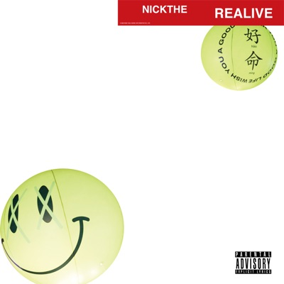

Lists & tables
清單與表格
One of the Pillar 4 pages. Classification and the full inventory are on the Pillar 4 overview.
Pillar 4 的其中一頁。元件分類與完整總表在 Pillar 4 總覽。
4.24 Data list
🟠 organismPurpose
用途
Row-divider list (icon chip + body + right amount), no per-row card — for dense record rows like earnings, payouts, products, projects. Use when rows of records need vertical density without a card per row. Avoid when ≥3 data columns need column alignment — use .ztor-table.
分隔線列表（icon chip + body + 右側金額），每列不包卡片 — 用於 earnings、payouts、products、projects 這類密集的紀錄列。當多列紀錄需要垂直節奏、又不想每列都包卡片時使用。需要 ≥3 個資料欄做欄對齊時別用 — 改用 .ztor-table。
Relationships
元件關係
Rendered preview (row-list examples)
視覺展示 (列表列範例)
.data-list__row--go（2026-09-11）——整列是入口（role="button"）：cursor pointer，hover／focus 只提亮行尾 __go 箭頭、列底不塗色。這種「一列一個設定、點了過去改」的列，欄目名放 __meta 在上、值放 __title 在下——值比欄目名重要。首個消費者：商品詳情總覽的「商品設定概覽」。
.data-list__row--disabled (2026-09-09) — the row stays in the list and stays readable, but can't be picked: only __row-main dims, so the status badge and any row link keep full strength (the badge is what explains why it can't be picked). First used by the Create bundle product picker: unlisted products stay listed and badged, can't be added to the bundle, and still link out to their detail page.
.data-list__row--disabled（2026-09-09）——這一列還在清單裡、看得見，但不能被選：只淡化 __row-main，右邊的狀態徽章與列上的連結維持原強度（不能被選的理由正是那顆徽章在說的話）。首個消費情境是建立組合的候選商品清單：已下架的商品照列、標徽章、不可加入，但仍點得進商品詳情。
Shared transaction-list renderer (components.js) — Earnings and Dashboard F3 use the SAME row. The status pill is per-call: Earnings shows it; Dashboard F3 passes hideStatus so the column is dropped (F3 lists settled income only, status is always settled — spec 5.1.1 §F3).
共用 transaction-list 渲染器（components.js）— Earnings 與儀表板 F3 用同一列。狀態徽章為 per-call：Earnings 顯示；儀表板 F3 傳 hideStatus 略去該欄（F3 只列已結算收入、狀態恆為 settled — 規格 5.1.1 §F3）。
Do & Don't
該做與別做
- Keep the icon chip neutral and carry status via the amount or meta.
- 讓 icon chip 維持中性，狀態透過金額或 meta 來表達。
- Use 20px outline Tabler glyphs so chips match the alert panel.
- 用 20px outline 的 Tabler glyph，讓 chip 與 alert panel 一致。
- Re-introduce colored icon fills — the hooks are intentionally monochrome.
- 重新加上彩色的 icon 填色 — 這些 hook 刻意維持單色。
- Wrap each row in its own card.
- 把每一列各自包成一張卡片。
For developers — classes · tokens · code給工程師 — class · token · 程式碼
Behavior details
行為細節
| State狀態 | Selector選擇器 | Change變化 |
|---|---|---|
| default預設 | .data-list__row | Hairline border-bottom髮絲線 border-bottom |
| last row最後一列 | :last-child | border-bottom: 0 |
| negative amount負值金額 | .data-list__amount--neg | Amount → --destructive金額 → --destructive |
| warning amount提醒色數值 | .data-list__amount--warn | Amount color → --status-warning-ink. Fills in the middle step between neutral and --neg; first consumer is the milestone due date in the project overview's progress summary (overdue red, due today amber, otherwise neutral).數值轉 --status-warning-ink。補齊中性與 --neg 之間的那一階；首個消費情境是項目總覽進度摘要的里程碑預計日（逾期紅、今天到期黃、其餘中性）。 |
| filtered out被篩選隱藏 | .data-list__row[hidden] | display: none — must win over the row's own display: griddisplay: none — 須蓋過列本身的 display: grid |
Class API (CSS classes — Props/API N/A, static prototype)
Class API（樣式類別） （CSS classes — 無 Props/API，靜態原型）
| Class / modifierClass／修飾子 | Effect效果 |
|---|---|
.data-list / __row / __row-main | Container / grid row / left group (icon + body)容器／grid 列／左側群組（icon + body） |
__icon (+ --neutral/-success/-error/-info) | 40px neutral chip (semantic hook only, visually identical)40px 中性 chip（僅語意 hook，視覺相同） |
__body / __title / __meta / __amount (+ --neg) | Title (ellipsis) + meta / right-aligned amount標題（ellipsis）+ meta／靠右對齊的金額 |
__icon--sm | 32px chip (matches .btn--icon.btn--sm height) + 16px glyph — for rows where the icon is a marker (＋/−/=) rather than a content thumbnail; the 52px default reads as an oversized frame there32px 小晶片（與同列 .btn--icon.btn--sm 等高）＋16px 圖示——用於「圖示是記號（＋/−/=）而非內容縮圖」的列；那裡用 52px 預設會顯得框太大 |
| Expandable child rows可展開的子列 | Not this component's any more. __row--child retired on 2026-09-03 (STYLE-DECISIONS Q107); lay Row disclosure (§4.204) over .data-list__row instead — .rowdis__child.rowdis__child--compact, wrapped together with the parent in .rowdis__group.rowdis__group--gutter (hierarchy is said by that panel now, not by indent).已不歸本元件。__row--child 於 2026-09-03 退場（STYLE-DECISIONS Q107），改在 .data-list__row 上疊 Row disclosure（§4.204）——.rowdis__child.rowdis__child--compact，並與母列一起包進 .rowdis__group.rowdis__group--gutter（階層改由那塊面板說，不是縮排）。 |
Product thumbnail row (.data-list__thumb--lg — 2026-09-11: same 52px footprint as __icon, used when the row is a product; first use order-detail line items)
商品縮圖列 (.data-list__thumb--lg——2026-09-11：與 __icon 同 52px 佔位，這一列就是一件商品時用；首用訂單明細品項列)
Token usage (→ Pillar 2 Role)
Token 使用 （→ Pillar 2 Role）
--border— row dividers--border— 列分隔線--muted— icon chip bg--muted— icon chip 背景--foreground-muted— chip glyph;--muted-foreground— meta--foreground-muted— chip glyph；--muted-foreground— meta--destructive— negative amount--destructive— 負值金額--font-ui— title;--font-display— amount--font-ui— 標題；--font-display— 金額
<div class="data-list__row"> <div class="data-list__row-main"><div class="data-list__icon data-list__icon--success">…</div><div class="data-list__body">…</div></div> <div class="data-list__amount">+$1,410.00</div> </div>
ds-components/data-list.css
ds-components/data-list.css
4.24b Review row
🟡 moleculePurpose
用途
Flat, no-card wizard Review-step summary: field/section name + value with a right-side "Edit →" action, rows separated by hairline dividers — no card chrome. Normalizes create-event.html's .ce-review-row, register-ip.html's .ri-summary, and create-project.html's flattened Review .card blocks (that page's 2026-06-25 comment already flagged this exact consolidation: "全頁無卡片化…這批歸第三批 review-row 設計判斷"). Use for a wizard's Review step; avoid for record lists (use Data list) and avoid wrapping rows in their own card — flat is the point. Also used for a read-only summary of values set in earlier steps: create-event step 6 “Other sale times” (2026-10-07, D361).
流程 Review 步驟的無卡片摘要列：欄位／區塊名＋值，右側「Edit →」動作，列間 hairline 分隔——無卡片外框。正規化自 create-event.html 的 .ce-review-row、register-ip.html 的 .ri-summary、create-project.html 扁平化的 Review .card（該頁 2026-06-25 註解已預告這次收斂：「全頁無卡片化…這批歸第三批 review-row 設計判斷」）。用於流程的 Review 步驟；紀錄清單改用 Data list，也別把列各自包卡片——扁平就是重點。也用在「值在前面步驟設定、這裡只唯讀列出」的摘要：建立活動第 6 步「其他售票時間」（2026-10-07，D361）。
Relationships
元件關係
Rendered preview (Event review step — default stacked rows)
視覺展示 (活動 Review 步驟——預設堆疊列)
__item--kv variant (inline label/value pairs, no per-row Edit — grouped fields under one outer Edit)
__item--kv 變體 (行內 label/value，無逐列 Edit——多欄共用外層一個 Edit)
Do & Don't
該做與別做
- Let long values wrap to a second line — never truncate a value the user is about to confirm.
- 讓長值換到第二行——使用者即將確認的值絕不截斷。
- Use
__item--kvfor a cluster of short fields sharing one outer Edit. - 一群共用外層一個 Edit 的短欄位用
__item--kv。
- Wrap
__itemin a.card— flat hairline-divided rows are the whole point. - 別把
__item包進.card——扁平＋hairline 分隔就是這個元件的重點。 - Put more than one Edit action per stacked
__item. - 別在堆疊型
__item裡放超過一個 Edit 動作。
For developers — classes · tokens · code給工程師 — class · token · 程式碼
Behavior details
行為細節
| State狀態 | Selector選擇器 | Change變化 |
|---|---|---|
| default預設 | .review-row__item | Hairline border-bottom: 1px solid var(--border-soft)髮絲線 border-bottom: 1px solid var(--border-soft) |
| last row最後一列 | :last-child | border-bottom: 0 |
| empty value空值佔位 | .review-row__value--empty | Italic, --muted-foreground斜體、--muted-foreground |
| event highlight活動亮點 | .review-row__value--highlight | Second line under the name — 12px, --brand-ink; hidden when empty (D300)名稱下方第二行——12px、--brand-ink；沒填就收起（D300） |
| action hover動作 hover | .review-row__action:hover | --foreground-muted → --foreground--foreground-muted → --foreground |
Class API (CSS classes — Props/API N/A, static prototype)
Class API（樣式類別） （CSS classes — 無 Props/API，靜態原型）
| Class / modifierClass／修飾子 | Effect效果 |
|---|---|
.review-row | Flex-column container of rows; no background/shadow (flat, no card chrome)直欄容器；無底色／陰影（扁平、無卡片外框） |
.review-row__item | One row — padding: 14px 0, bottom hairline一列——padding: 14px 0、底部髮絲線 |
.review-row__head | Flex row: name (left) + action (right)flex 列：名稱（左）＋動作（右） |
.review-row__name | Field/section name — font-ui 15/500欄位／區塊名稱 — font-ui 15/500 |
.review-row__action | "Edit →" link — font-ui 12/500, subtle, underline「Edit →」連結 — font-ui 12/500、弱化、底線 |
.review-row__value (+ --empty) | Value text — wraps by default; --empty = italic muted placeholder值文字 — 預設換行；--empty = 斜體弱化佔位 |
.review-row__item--kv | Inline modifier: grid 130px 1fr label/value, single line, no action行內修飾子：grid 130px 1fr label/value，單行、無動作 |
Token usage (→ Pillar 2 Role)
Token 使用 （→ Pillar 2 Role）
--border-soft— row dividers--border-soft— 列分隔線--muted-foreground— empty state, kv label, action default--muted-foreground— 空值佔位、kv label、動作預設色--foreground/--foreground-muted— value / action--foreground/--foreground-muted— 值／動作--font-ui,--lh-comfy--font-ui、--lh-comfy
<div class="review-row">
<div class="review-row__item">
<div class="review-row__head">
<h3 class="review-row__name">Event name</h3>
<a class="review-row__action" href="#">Edit →</a>
</div>
<div class="review-row__value review-row__value--empty">Not entered</div>
</div>
</div>
ds-components/review-row.css
ds-components/review-row.css
4.24c KV list
🟢 atomPurpose
用途
Read-only key/value row: label left, value right, a hairline divider above every row but the first (--border-soft since Q72, 2026-08-25 — row dividers use the soft grey; the brighter --border is reserved for group dividers). For "look, don't touch" summaries — detail-page meta cards, status snapshots. If the value is editable, use Field system (.field / .input) instead; never dress this component up as a form. Unlike Review row it carries no per-row Edit action and no card chrome of its own — it expects to sit inside a Form section card.
唯讀鍵值列：鍵在左、值在右，除首列外每列上方一條 hairline 分隔線（Q72，2026-08-25 起用 --border-soft——列線走暗灰，較亮的 --border 留給組線；原本用 --border 與其他列式版面擺在同一張卡裡會出現兩種亮度的橫線）。用在「只看不改」的摘要——詳情頁 meta 卡、狀態快照。值若可編輯請改用 Field system（.field / .input），不要拿本元件偽裝成表單。與 Review row 的差別：本元件沒有逐列 Edit 動作、也不自帶卡片外框，預期放在 Form section 卡內。
Relationships
元件關係
Rendered preview (Product detail — delivery meta card; last row shows the --lead modifier opening a second group)
視覺展示 (商品細節頁——交付 meta 卡；最後一列示範 --lead 修飾子開啟第二組)
Do & Don't
該做與別做
- Mark the first visible row of a group
.kv--leadwhen conditional rows above it may be[hidden]— a hidden row still counts as:first-child, so the automatic first-row rule fires on the wrong row. - 當上方有條件列可能被
[hidden]隱藏時，把該組第一個「看得見」的列標.kv--lead——被隱藏的列仍算:first-child，自動首列規則會落在錯的列上。 - Cap the value width yourself (
max-widthon.kv__v) when values can be long — the component sets no width ceiling. - 值可能很長時自行加寬度上限（在
.kv__v上加max-width）——本元件不預設寬度上限。
- Don't put an input, switch, or button in
.kv__v— an editable value belongs in a.field. - 別在
.kv__v裡放 input、switch 或按鈕——可編輯的值屬於.field。 - Don't rely on the browser's default
hiddenbehavior:.kvisdisplay:flex, which beats it, so.kv[hidden]must zerodisplayexplicitly (the component already does — don't override it back). - 別依賴瀏覽器對
hidden的預設行為：.kv是display:flex會蓋過它，所以.kv[hidden]必須顯式歸零display（元件已內建——別再覆寫回去）。
For developers — classes · code給工程師 — class · 程式碼
.kv | One row — flex, space-between, baseline-aligned, --sp-8 vertical padding, 1px --border top hairline, --fs-13一列——flex、space-between、baseline 對齊、--sp-8 上下內距、1px --border 上分隔線、--fs-13 |
.kv__k | Key — --muted-foreground鍵——--muted-foreground |
.kv__v | Value — right-aligned, --fw-medium, default foreground值——右對齊、--fw-medium、前景色 |
.kv__k--icon | Key with a leading icon (2026-11-02, D501) — two-column grid, --sp-8 gap; the icon centers on the name line and .kv__sub lines up with the name, not the icon. Used by the scan-to-earn claimable items on pickup-detail.html鍵前面帶圖示（2026-11-02，D501）——兩欄 grid、間距 --sp-8；圖示與名稱同列置中，.kv__sub 對齊名稱左緣而非圖示。用於 pickup-detail.html 掃碼領點「領取項目」列 |
.kv--lead | Group lead row — drops the top hairline and top padding (same as :first-child); use when [hidden] siblings make :first-child unreliable群組首列——去掉上分隔線與上內距（等同 :first-child）；當有 [hidden] 兄弟讓 :first-child 失準時使用 |
.kv[hidden] | display:none is declared explicitly — required because display:flex overrides the UA hidden default顯式宣告 display:none——因為 display:flex 會蓋過瀏覽器對 hidden 的預設，必須這樣寫 |
Token usageToken 使用: --border · --muted-foreground · --fs-13 · --fw-medium · --sp-8 · --sp-12
Consumers採用頁: bundle-detail.html (right-rail bundle summary)（右欄「組合概況」卡）, auction-detail.html (right-rail auction status)（右欄「競標狀態」卡）, product-detail.html (three right-rail meta cards)(右側 meta 欄三張卡)
ds-components/kv-list.css
Merged · Fact list已併入 · Fact list （2026-11-09，Q140）
The separate read-only fact list (.fact-list) looked the same as this one except for the row line colour and long-value wrapping. Q140 kept KV list only: every use now writes .kv / .kv__k / .kv__v, rows use --border-soft, and .kv__v wraps long values.
原本另一支唯讀事實列（.fact-list）跟本元件長得一樣，只差列線顏色與長值換行。Q140 裁決只留 KV list：所有用處改寫成 .kv／.kv__k／.kv__v，列線用 --border-soft，.kv__v 會讓長值換行。用在建立商品、商品詳情、組合包頁的取貨場次資訊，以及專案詳情的更新紀錄。
4.25 Table
🟠 organismHeader cells have neither a background nor a bottom rule (2026-07-31, two calls the same day) — a filled header inside a card reads as a second block, and the rule went next so every list header across the site matches (STYLE-DECISIONS Q41). Whitespace carries the separation; each tbody row keeps its own rule. Companion classes: .ztor-table-scroll (horizontal scroll wrapper; inside a .card the table drops its own frame so you do not get a box in a box), .ztor-table__nowrap (short-value columns; without it a two-character word breaks one glyph per line), .ztor-table__sub (second line under the main column for source / module / category — saves a whole column of width), .ztor-table--truncate (modifier: every cell stays on one line; the name cell takes the leftover width via max-width:0 + width:100% so overlong text is ellipsised instead of widening the table), .ztor-table__mediatext (wrapper for a two-line name inside .ztor-table__media). Always put the thumbnail inside the name cell via .ztor-table__media — a column of its own pays the 20px cell padding on both sides, leaving the image adrift in an empty column. Thumb is 40px with a --sp-12 gap; 40px equals the row's content height, so row height is unchanged.
表頭沒有底色、也沒有下框線（2026-07-31 同日兩段裁決）——在卡片裡填底色會讀成另一個區塊；下框線則是為了讓全站列表表頭一致（見 STYLE-DECISIONS Q41）。分隔改由留白承擔，tbody 每一列的分隔線不動。伴生類：.ztor-table-scroll（橫向捲動容器，坐在 .card 內時表格會取消自框、避免框中框）、.ztor-table__nowrap（短值欄不換行，否則兩個字的詞會被逐字斷成直行）、.ztor-table__sub（主欄位下的第二行，放來源／模組／分類這類歸屬資訊，省下一整欄寬度）、.ztor-table--truncate（modifier：整張表一律單行，主欄位用 max-width:0 ＋ width:100% 吃掉剩餘寬度，過長文字以點點點收掉而不把表格撐寬）、.ztor-table__mediatext（.ztor-table__media 內要放兩行文字時的包裝）。縮圖一律用 .ztor-table__media 併進名稱格、不要自成一欄——獨立欄會在圖兩側各吃一次 20px 內距，圖會浮在空欄中間。縮圖 40px、間距 --sp-12；40px 等於資料列的內容高，列高不變。
2026-10-15 — .ztor-table--fluid: for a many-column table sitting in a column narrower than the page. Left/right cell padding drops from --sp-20 to --sp-16 (the Q112 floor); vertical padding is unchanged. Same name and purpose as .admin-table-wrap--fluid. Money columns use .ztor-table__amt (right-aligned, tabular, no wrap — header included). First consumer: the 11-column sales record on event detail, which now fits 1440px without a horizontal scroll (375px still scrolls inside the card). D424 (same day): only the row's outer edges keep --sp-16 (Q112 is about the row against the card's rounded frame); between columns each side drops to --sp-6 (12px column gap). With the order number and paid-at merged into one cell (number on top, time as .ztor-table__sub below), the now 10-column table fits 1280px without scrolling and keeps buyer names on one line at 1440.
2026-10-15 .ztor-table--fluid：欄多、坐在比整頁窄的內容欄裡的表格用——左右儲存格內距 --sp-20 收到 --sp-16（Q112 下限），上下不動；命名與用途同 .admin-table-wrap--fluid。金額欄一律 .ztor-table__amt（靠右、等寬數字、不折行，表頭同掛）。首個消費者：活動詳情「售票紀錄」11 欄表，1440 寬不需橫向捲動（375 仍在卡內捲動）。D424（同日）：只有列的最左、最右兩端維持 --sp-16（Q112 管的是列貼著卡片圓角外框的內距），欄與欄之間每邊收成 --sp-6（欄距 12）；搭配「訂單編號＋付款時間」併成一格（編號一行、時間 .ztor-table__sub 一行），10 欄表 1280 寬不需捲動、1440 買家姓名不折行。
2026-11-02 — .ztor-table--menu: for a table whose rows end in a ⋮ dropdown. The table's own overflow:hidden cuts the menu in half, so this modifier releases overflow on the table only (same approach as .admin-table-wrap--menu). Don't wrap it in .ztor-table-scroll — a horizontal scroller clips the menu too. On narrow screens, mark secondary columns (header and cells) with .ztor-table__opt; they hide at ≤560px, and whatever they show must still be reachable elsewhere (e.g. the detail popup the row opens). Clickable rows (.ztor-table__row + tabindex="0", Enter/Space) get a 2px --primary inset focus ring, same as .product-list__row--link; the consumer keeps the ⋮ from triggering the row. First consumer: the claimable-items table on the scan-to-earn session page.
2026-11-02 .ztor-table--menu：列尾有 ⋮ 下拉選單的表。表格自己的 overflow:hidden 會把選單裁成半截，這個 modifier 只放行表格這一層（做法同 .admin-table-wrap--menu）。不要再包 .ztor-table-scroll——橫捲容器同樣會裁掉選單；窄螢幕改把次要欄（表頭與儲存格都標）掛 .ztor-table__opt，≤560px 收起，收起的數字必須在別處仍看得到（例如點列開的明細彈窗）。整列可點的列（.ztor-table__row＋tabindex="0"，Enter／Space 觸發）有 2px --primary 內描邊焦點，同 .product-list__row--link；列內 ⋮ 由消費端排除、不觸發整列。首個消費者：掃碼領點詳情的「領取項目」表。
Purpose
用途
Self-framed data table (1px border + rounded surface) with muted header row, hairline row dividers, and check/cross/partial status cells. 2026-07-25 (Q29) converged the frame only to match variant-table (own border instead of shadow); spacing/type stay roomy (padding 16/20, header 13, body 14). Flush inside a .card the card frames it (table border suppressed); standalone/inset tables keep their own border. Use when ≥3 data columns need aligned comparison (Earnings transactions, feature-comparison grids); avoid for single icon+body+amount rows — use .data-list.
自帶 1px 邊框的資料表（圓角 surface），含淡化的 header 列、髮絲線列分隔，與 check／cross／partial 狀態格。2026-07-25（Q29）只收斂邊框對齊 variant-table（自帶邊框取代陰影）；間距／字級維持原樣較鬆（padding 16/20、表頭 13、內文 14）。直接坐進 .card（flush）時由卡出框、表格自身邊框取消；獨立／inset 表格保留自身邊框。當 ≥3 個資料欄需要對齊比較時使用（Earnings 交易、功能比較表）；單純 icon+body+金額的列別用 — 改用 .data-list。
Relationships
元件關係
Rendered preview (comparison table)
視覺展示 (比較表)
| Feature | Free | Pro |
|---|---|---|
| Custom storefront | ✗ | ✓ |
| IP rentals | ~ | ✓ |
| Priority payouts | ✗ | ✓ |
Expandable rows (Earnings transactions · F7 — clickable row + trace detail, shown expanded)
可展開列 (Earnings 交易 · F7 — 可點列＋追溯詳情，此處示範展開態)
| Nov 22 | Tide Pool zine × 14 · E-Shop | $368.48 | |
|
This transaction $392.00Platform & payment fees −$23.52Net of fees $368.48 |
|||
Two families, one table (Earnings transactions · F7 · D250 — income rows and ledger rows on one timeline)
兩族一表 (Earnings 交易明細 · F7 · D250 —— 收入列與帳務異動列在同一條時間軸上)
| Date | Item | Fees | Net | Status |
|---|---|---|---|---|
| Nov 24 | Kowloon After Dark OST · pre-order · Project support | −$84.60 | $1,325.40 | Pending Available Dec 8 |
| Nov 18 | Bank transfer ••3417 · Payout | — | −$5,202.50 | Paid |
| Nov 05 | Bank transfer ••3417 · Payout | — | — | Failed |
Three rules carry the split. Weight — .ztor-table__row--ledger drops the whole row to --muted-foreground; a payout answers "why did my balance change", not "what did I earn". Badge shell — income states are filled tints, ledger states are outlined, so the income "Paid out" and the payout "Paid" never read as the same thing. Blanks — a column that does not apply to that family shows .tx-na's em dash, never −$0.00; a zero would read as "this one really was charged nothing". Pending rows append the date the money unlocks (.tx-status__when) because that is the question creators actually bring to this table.
三條規則撐起這個分工。份量——.ztor-table__row--ledger 把整列降到 --muted-foreground；提款回答的是「餘額為什麼變了」，不是「賺了多少」。徽章的殼——收入族填色、帳務異動族描邊，收入的「已撥款」與提款的「已付款」才不會讀成同一件事。留白——不適用於該族的欄位用 .tx-na 的破折號，不寫 −$0.00；填零會被讀成「這筆真的扣了 0 元」。待結算的列在徽章後面接可動用的日期（.tx-status__when），因為那是創作者拿到這張表真正要問的事。
| default | tr:hover | |||
|---|---|---|---|---|
| row |
|
|
__check / __cross / __partial — comparison-table boolean glyphs.__check／__cross／__partial——比較表的布林記號。| __check | __cross | __partial | |
|---|---|---|---|
| cell | ✓ | ✗ | ~ |
Do & Don't
該做與別做
- Use the
__check / __cross / __partialhelpers for status cells. - 狀態格用
__check / __cross / __partial這些 helper。 - Keep the table inside its rounded card frame.
- 讓表格留在它的圓角卡片框內。
- Add per-cell borders; only horizontal hairline dividers.
- 加上每格的 border；只用水平髮絲線分隔。
For developers — classes · tokens · code給工程師 — class · token · 程式碼
Behavior details
行為細節
| State狀態 | Selector選擇器 | Change變化 |
|---|---|---|
| default預設 | tbody td | --foreground, bottom hairline--foreground、底部髮絲線 |
| last row最後一列 | tr:last-child td | border-bottom: 0 |
| row hover列 hover | tr:hover td | Cells fill --muted格子填入 --muted |
| row expanded列展開 | .ztor-table__row[aria-expanded="true"] | Chevron rotates 90°, cells fill --muted, sibling .ztor-table__detail shown (JS toggles [hidden])chevron 轉 90°、格子填 --muted、相鄰 .ztor-table__detail 顯示（JS 切 [hidden]） |
| detail hidden詳情隱藏 | .ztor-table__detail[hidden] | display: none |
Class API (CSS classes — Props/API N/A, static prototype)
Class API（樣式類別） （CSS classes — 無 Props/API，靜態原型）
| Class / modifierClass／修飾子 | Effect效果 |
|---|---|
.ztor-table | Card-framed table; surface, radius-md, shadow-card, overflow hidden卡片框起的表格；surface、radius-md、shadow-card、overflow hidden |
thead th / tbody td | Muted header / body cell with hairline divider淡化的 header／帶髮絲線分隔的內文格 |
.ztor-table__feature / __check / __cross / __partial | Label cell / ✓ success / ✗ error / ~ warning標籤格／✓ success／✗ error／~ warning |
.ztor-table__media / .ztor-table__thumb / .ztor-table__media-head | Media feature cell: an inner flex wrapper (never the <td> — display:flex on a cell breaks fixed column widths) leads the name + badge (--radius, muted fill, 1px border, object-fit: cover). Promoted 2026-07-25 from the Deck-for-Sony finance table; started from the admin IP-bank table's 36px thumb, shrunk a notch on review (36→32, radius one step up), now shared. 2026-07-31 user: turned portrait — height locked at --zt-thumb-h (40px, one notch back up from 32 per that same day's earlier decision so the thumb matches row content height), width derives as --zt-thumb-w = --zt-thumb-h × --img-portrait (≈32px, 32×40) instead of being declared directly, so row height can't drift if the ratio ever changes. Put .ztor-table__media-head on that column's <th> (indent = --zt-thumb-w) so the header lines up with the name instead of the image.帶縮圖的標籤格：flex 包在內層 wrapper（不可直接放 <td>——display:flex 會讓儲存格脫離表格排版、固定欄寬失效），讓縮圖（--radius、muted 底、1px 邊框、object-fit: cover）排在名稱＋徽章前面。2026-07-25 自 Deck for Sony 財務表 promote；源自 admin IP Bank 表格的 36px 縮圖，檢視後再小一階（36→32、圓角上一階），改為共用。2026-07-31 使用者：改直式——高度鎖在 --zt-thumb-h（40px，同日稍早裁決的「與列等高」再往上一階），寬度由 --zt-thumb-w = --zt-thumb-h × --img-portrait 推導（≈32px，32×40），不再直接宣告寬度，比例日後若變動也不會拖動列高。該欄的 <th> 加 .ztor-table__media-head（縮排＝--zt-thumb-w），讓欄位名稱對齊名稱、不是對齊縮圖。 |
.ztor-table__row / .ztor-table__chev | Clickable row (aria-expanded) + leading chevron that rotates 90° when open可點列（aria-expanded）＋列首 chevron，展開時轉 90° |
.ztor-table__detail ([hidden]) | Sibling detail row (<td colspan>), --muted bg; [hidden] hides it相鄰詳情列（<td colspan>），--muted 底；[hidden] 隱藏 |
.tx-detail / __meta / __id / __copy / __note / __ladder | Trace block: Event ID <code> + copy button, rate version, note, and .waterfall mini-ladder追溯區塊：Event ID <code>＋複製鈕、費率版本、註記、與 .waterfall 小階梯 |
.ztor-table__row--ledger | Ledger row (payout / void / deduction) sharing a table with income rows — whole row drops to --muted-foreground. Selector carries tbody to outweigh .ztor-table tbody td與收入列同表的帳務異動列（提款／作廢沖銷／扣款）——整列降到 --muted-foreground。選擇器帶 tbody 才壓得過 .ztor-table tbody td |
.ztor-table__amt / --muted | Money cell: right-aligned, tabular figures, no wrap — a narrow column otherwise folds the minus sign of "−$5,202.50" onto its own line, where it reads as a dash. --muted is the secondary amount (fees)金額欄：靠右、等寬數字、不換行——窄欄會把「−$5,202.50」的負號折到上一行，單獨一行的負號會被讀成破折號。--muted 是次要金額（扣項） |
.tx-status / __when | Status cell: badge plus, on pending rows only, the date that amount unlocks狀態格：徽章，待結算的列再接該筆可動用的日期 |
.tx-na | The em dash for a column that does not apply to this row's family. Never −$0.00 — a zero reads as "this one really was charged nothing"不適用於該列所屬族別的欄位所寫的破折號。不寫 −$0.00——填零會被讀成「這筆真的扣了 0 元」 |
.tx-detail__kv | Key-value summary inside an expanded ledger row (income rows get __ladder instead); reuses kv-list.css, adds only a width cap and tighter rows帳務異動列展開後的鍵值摘要（收入列用的是 __ladder）；複用 kv-list.css，只加寬度上限與較緊的列距 |
Token usage (→ Pillar 2 Role)
Token 使用 （→ Pillar 2 Role）
--card— table fill--card— 表格填色--muted— header bg + row hover--muted— header 背景 + 列 hover--border— dividers + header rule--border— 分隔線 + header 分隔--foreground/--muted-foreground— body / header text--foreground/--muted-foreground— 內文／header 文字--status-success/-error/-warning— cell marks--status-success/-error/-warning— 格內標記--radius-md/--shadow-card;--font-ui/--font-body--radius-md/--shadow-card；--font-ui/--font-body
<table class="ztor-table"> <thead><tr><th scope="col">Feature</th><th scope="col">Free</th><th scope="col">Pro</th></tr></thead> <tbody><tr><td class="ztor-table__feature">Custom storefront</td><td><span class="ztor-table__cross">✗</span></td><td><span class="ztor-table__check">✓</span></td></tr></tbody> </table>
ds-components/table.css
4.26 Product list
🟠 organismPurpose
用途
2026-09-04 (user ruling, “this spacing does not need to be this big”): the list thumbnail __image shrinks from 76×114 to 60×90 (width 60, height still derived from --img-portrait 2:3), so the row goes 154 → 130. The --sp-20 block padding stays — what made the row tall was the portrait poster, not the padding. Thumbnail columns follow: 84px ones (--eshop/--bundles/--auctions) become 68, 76px ones (--ip/--rented/events) become 60, each keeping its original gutter. --pickup keeps 76 — that column holds a __thumb (76px square QR icon chip), not the shrinking __image.
Borderless inventory table for E-Shop: product identity (image / thumb + title + meta) + category + price + status + stock + visibility switch + edit action, on row-divider layout. The E-Shop page swaps column layouts per panel via page-level modifiers — --eshop (Products: image / category / price / status / stock / visibility), --bundles (Bundles: image / members / bundle price / stock), --auctions (Auctions: image / category / bid / activity) — all layered on the same base grid. Below 760px the header hides and rows restack. 2026-07-31 user: .product-list__image turned portrait (76×94, width unchanged, height from --img-portrait) — real product photos now render uncropped instead of a square crop of the portrait original. Exceptions: 2026-08-05 (D176 / Q52): ratio value changed to 2 / 3 (76×114, row 154) and the events square exception was dropped — .product-list--events .product-list__image no longer overrides, so all eight list thumbnails now share one ratio with no exception. the pickup page's .product-list__thumb QR icon-chip is a different class and is unaffected. 2026-08-04 pinned section (.product-list__divider + .product-list__pin-mark, spec 5.1.5 F4 / D172) — rows pinned to the front of the fan-facing shop sit above a labelled divider carrying a n/10 count; membership is position, so dragging a row across the divider is what pins or unpins it. No fan-facing "featured" badge: the creator-side cue is the section plus a small pin glyph before the name, which is the only cue left whenever the divider is hidden. 2026-08-05: the divider now holds in every filter and search state (it used to collapse the moment either was active). Filtering only hides non-matching rows, so what stays on screen is still "pinned above, rest below" — the visibility test is therefore "can this view see any pinned row", not "is a filter active". None visible → the whole divider collapses, since a rule reading "pinned above" with nothing above it would lie. The count keeps reporting the panel-wide n/10 quota. The --empty invitation box, by contrast, shows in every filter state (pinning belongs to the list, not to the "All products" view, and "filter to live, then pick a few to feature" is a normal path) — with nothing pinned there are no two sections to divide, so nothing can be misread. Only its action link collapses when the current view holds no pinnable row (a draft-only filter), since it would otherwise be a button that does nothing. With nothing pinned yet the divider stays visible, switches to its --empty variant (a rounded 1px box instead of a single rule — with nothing above it, it invites rather than divides) and swaps to a prompt — "Pin items to the top." with the right-hand slot swapped from the n/10 count to a borderless .btn--ghost action (__divider-cta) — sitting exactly where the pinned section will appear. The link guides rather than acts: it scrolls the first pinnable row into the upper third, opens that row's action menu and rings the Pin entry with .dropdown__item.is-hinted (§4.26); choosing what to pin stays with the creator. 2026-10-07 (D361): the events list (--events) joins the stacked status rule of --eshop / --bundles / --auctions — an unlisted event shows an “Unlisted” badge under its stage badge, since listing is a separate dimension from the stage.
2026-09-04（使用者裁示「這個間距不需要這麼大就縮短」）：清單縮圖 __image 由 76×114 收成 60×90（寬度改 60，高度仍由 --img-portrait 2:3 推導），列高隨之由 154 變 130。上下留白維持 --sp-20——真正撐高列的是直式海報而不是留白。縮圖欄的欄寬跟著收：原本 84px 的（--eshop／--bundles／--auctions）收成 68、原本 76px 的（--ip／--rented／活動清單）收成 60，各自維持原來的 gutter。--pickup 維持 76——那一欄放的是 __thumb（76px 方形 QR 圖示晶片），不是會縮的 __image。
E-Shop 的無框庫存表：商品識別（圖／縮圖＋標題＋meta）＋分類＋價格＋狀態＋庫存＋可見度開關＋編輯動作，列分隔線版式。E-Shop 頁以頁面層修飾子按分頁切換欄位版型——--eshop（商品：圖／分類／價格／狀態／庫存／可見度）、--bundles（套組：圖／成員／套組價／庫存）、--auctions（競標：圖／分類／出價／動態）——都疊在同一 base grid 上。760px 以下表頭隱藏、列重新堆疊。2026-07-31 使用者：.product-list__image 改直式（76×94，寬度不變、高度由 --img-portrait 推導）——真實商品照不再被裁成方形。例外：2026-08-05（D176／Q52）：比例值改 2 / 3（76×114、列高 154），同時撤除活動的方形例外——.product-list--events .product-list__image 的覆寫已刪除，八支清單縮圖現在沒有例外、全部同一個比例；取貨頁的 .product-list__thumb QR icon chip 是不同 class，不受影響。2026-10-07（D361）：活動清單（--events）的狀態欄加入 --eshop／--bundles／--auctions 那條直排規則——已下架的活動在階段徽章下面多一顆「已下架」，因為上架是階段以外的另一個維度。
2026-11-02 · .product-list--inset (user: “a list sitting under a toolbar with no section around it needs padding on both sides”): when the list follows a .list-toolbar without a card, the header and every row get padding-inline: var(--sp-24) (--sp-16 on rows ≤760px), so the first column lines up with the first tab's label, and the last (numeric) column aligns right. Lists inside a card don't need it. Used by the claim log on pickup-detail.html.
2026-11-02 · .product-list--inset（使用者：「topbar 這種下面的東西沒有 section，就要左右都有 padding」）：清單直接接在 .list-toolbar 下、外面沒有卡片時加這個修飾子，表頭與每一列左右各退 --sp-24（≤760px 列改 --sp-16），第一欄對齊第一個分頁的文字、最後一欄（數字）靠右。包在卡片裡的清單不用加。使用處：pickup-detail.html 掃碼領點的領取紀錄。
Relationships
元件關係
Rendered preview (base columns; E-Shop adds image / price / stock via page modifier)
視覺展示 (基本欄位；E-Shop 以頁面修飾子加圖片／價格／庫存欄)
--bundles variant (E-Shop Bundles panel — image / bundle / members / price / status / stock)
--bundles 變體 (E-Shop 套組分頁——圖／套組／成員／價格／狀態／庫存)
--ip variant (2026-07-20 — My IP list, spec 5.1.4 §F6 — icon / IP name+badge / rights / rented / revenue / price / mktplace toggle / manage)
--ip 變體 (2026-07-20 — 我的 IP 清單，spec 5.1.4 §F6——icon／IP 名稱+標籤／權利資訊／租出數／收入／租金／Mktplace 開關／Manage)
--eshop drag handle (Products rows lead with a .product-list__drag grip; picked-up row shows .is-dragging. No-image placeholder can hold a category icon instead of the text mark — see rows below)
--eshop 拖曳握把 (Products 列最前放 .product-list__drag 握把；拿起的列套 .is-dragging。無圖占位可放分類 icon 取代文字 mark——見下方列)
Do & Don't
該做與別做
- Use Badge variants for status and Switch for visibility — no bespoke pills.
- 狀態用 Badge 變體、可見度用 Switch — 不另刻 pill。
- Extend columns with a page-level modifier (like
--eshop), not by editing the base grid. - 用頁面層修飾子（如
--eshop）擴充欄位，不直接改基本 grid。 - On
--eshop, the whole row navigates to Edit on click (2026-07-23, same pattern as Orders/Creators rows) — resolve the destination from that row's own kebab "Edit"<a href>, don't duplicate the draft-vs-created branching logic in a second place. --eshop整列點擊導向編輯（2026-07-23，比照 Orders／Creators 列的既有模式）——導頁目的地讀該列 kebab「編輯」的<a href>，別在別的地方另外複刻一份草稿／已建立的判斷邏輯。
- Don't use it for transaction ledgers — use Table for dense numeric grids.
- 交易流水帳別用 — 密集數字表格用 Table。
- Don't put borders around rows — the system look is row-divider only.
- 別給列加外框 — 系統樣貌只用列分隔線。
For developers — classes · tokens · code給工程師 — class · token · 程式碼
橫向捲動包層 .product-list-scroll（2026-08-06，八個消費頁全數套用）：清單列有 7–9 欄、最窄 830–1160px，而 app 外殼的 .main 是 overflow-x: hidden——視窗一窄，右側的「狀態」「操作」幾欄會被切掉而且捲不到，每一列的 ⋮ 在那個寬度區間整個點不到（既有的 ≤760px 堆疊版型只救得了手機，760px 到各變體最小寬之間是漏的，筆電常見的 1280–1440 就落在裡面）。做法沿用站上既有的表格橫捲；min-width: min-content 讓清單撐到欄寬加總那麼寬，欄數少、放得下的變體不會長出捲軸。上下的 padding-block 是給 :hover 浮起陰影讓位（overflow-x 一旦不是 visible，overflow-y 也會被算成 auto），用等量負外距抵銷、版面高度不變。
兩端固定欄（2026-09-11，使用者指示）：在 .product-list-scroll 內，握把（第一欄）與動作欄（最後一欄）position: sticky 各釘在左右緣，表頭同欄位跟著釘；中間的欄先依 minmax 縮到各自的最小寬，min-content 到底才長出捲軸，內容從動作欄底下滑過去、右側被遮住。≤760px 的堆疊版型另有自己的定位規則（動作欄 absolute），這一段以 @media (min-width: 761px) 圈開。在站上還沒設計更小螢幕的版型之前，每一張清單都先照這一套走。被遮那一側的內容漸變透明（同日第四版；前三版都失敗於同一件事：釘住的格自己沒有底、底下是會動的星空，凡是在格上畫東西——實色底、毛玻璃、漸進模糊——都是一塊看得見的方形，在容器上掛 mask 又把釘住的格一起 mask 掉）：mask 掛在中間每一格自己身上，一條 linear-gradient 由 partials/list-scroll.js 算好的變數定位——容器上的 --pls-lx／--pls-rx（淡出帶起點＝釘住格內緣＋scrollLeft；該側沒被遮就寫 ±99999px 推出視野＝關掉）與 --pls-fade（帶寬 --sp-56），每格自己的 --cell-x（在清單本體裡的 x，只在版面變時重量）；格的 mask 座標＝容器座標減 --cell-x，同一條 gradient 對每格都對。捲動只改容器上兩個變數，格的 mask 由瀏覽器重算。釘住的格、星空與列的 hover 玻璃都不在 mask 裡，真正淡掉的只有滑到底下的圖與字；同支 js 也依捲動位置在容器上寫 data-scrolled-left／data-scrolled-right，沒被遮的清單不掛 mask。釘選分隔列 __divider 整條 sticky 釘在左緣、寬度＝看得到的那一段（--pls-w＝容器 clientWidth，js 寫上），框的右緣永遠在視野裡、「立即釘選」永遠在右端（使用者：「這個要隨著寬度縮放，立即釘選要一直在右邊」）。橫捲拉桿 .product-list-scrollbar（使用者：「當有遮蔽時，下方要有一條拉吧，粗一點好拖動，上面要有點點矩陣紋理，像盲人點字」）：清單自己的捲軸在整張表最底下搆不到，js 在容器後面補一條只有橫向捲軸的代理容器（內容寬＝清單本體、兩邊 scrollLeft 互相同步），sticky 在頁面捲動容器底緣；只在放不下時出現。拉桿本體 20px 膠囊（首版 14，使用者：「再粗一點」）、::-webkit-scrollbar-thumb 鋪 5px 間距、--foreground 22% 的圓點，點只畫在透明 border 內縮出的 padding-box（上下 5＝兩整排、左右 10 避開圓弧）、橫向 background-repeat: round 不切半顆（首版 3px／全值、直接鋪滿，使用者兩輪：「點字不要這麼密、顏色不要這麼亮」「還是太亮，有些點點被切掉」）；不寫 scrollbar-width／scrollbar-color——Chrome 121 起標準屬性一有值就忽略 ::-webkit-scrollbar。
Behavior details
行為細節
| State狀態 | Selector選擇器 | Change變化 |
|---|---|---|
| hover | .product-list__row:hover | Row bg --accent (Q9 2026-07-13; text here previously said --muted, out of sync with the CSS — fixed 2026-07-20)列底色 --accent（Q9 2026-07-13；此處文字曾誤寫 --muted、與 CSS 不同步，2026-07-20 修正） |
hover (--ip / --eshop) | .product-list--ip .product-list__row:hover, .product-list--eshop .product-list__row:hover | 2026-07-20 (--ip), extended 2026-07-21 to --eshop (incl. --bundles/--auctions) — superseded: since Q34 (2026-07-26) the lift is the base hover for every variant and this scoped rule was deleted; since 2026-08-28 the lifted row is a glass card (--ztu-glass-bg + blur + --radius-lg + --shadow-lift-flat/--shadow-edge-top). Original note: overrides the base flat hover: lifts like .is-dragging instead — --card bg + --radius-md + --shadow-lift-flat, position:relative;z-index:1 so the shadow isn't clipped by neighboring rows' hairlines. Also zeroes its own border-bottom and (via :has(+ .product-list__row:hover)) the preceding row's border-bottom, so no divider line cuts across the lifted card's top/bottom edge. Uses --shadow-lift-flat rather than --shadow-float — the plain float shadow's built-in 1px rim read as an unwanted border against the row's near-white lifted background (light mode); dark mode is unaffected since its rim is the only visible lift cue there2026-07-20（--ip），2026-07-21 擴大到 --eshop（含 --bundles／--auctions）——已被取代：2026-07-26 Q34 起浮起成為全部變體的 base hover，這條 scoped 規則已刪；2026-08-28 換裝後浮起的列改成玻璃卡（--ztu-glass-bg＋模糊＋--radius-lg＋--shadow-lift-flat／--shadow-edge-top）。原說明：覆蓋 base 的純換底色：改成像 .is-dragging 一樣浮起——--card 底＋--radius-md＋--shadow-lift-flat，position:relative;z-index:1 避免陰影被相鄰列的分隔線切掉。同時把自己的 border-bottom 歸零，並用 :has(+ .product-list__row:hover) 把「上一列」的 border-bottom 也歸零，讓浮起的卡片上下緣不被分隔線切過去。改用 --shadow-lift-flat 而非 --shadow-float：後者內建的 1px rim 在淺色近白背景上會被誤讀成一圈邊框；深色不受影響，深底仍需要 rim 才看得出浮起 |
| draft | .product-list__title--draft · .product-list__empty | Draft / unfilled cells show muted placeholder (Untitled / —) — D092, applies to all three E-Shop panels草稿／未填欄顯示淡色占位（未命名／—）— D092，三類 E-Shop 分頁通用 |
| drag handle | .product-list__drag | Leading grip on --eshop Products rows — grab to reorder (fan-facing display order, D083); grab→grabbing cursor, hidden ≤760px--eshop Products 列最前的握把 — 抓它才能重排（粉絲端陳列順序，D083）；grab→grabbing 游標，≤760px 隱藏 |
| dragging | .product-list__row.is-dragging | Picked-up row lifts to E3: --shadow-lift-flat (2026-07-21, was --shadow-float — same rim rationale as the hover row above) + z-index + grabbing; live translate driven by page JS (only --eshop Products)被拿起的列抬升到 E3：--shadow-lift-flat（2026-07-21，原為 --shadow-float，理由同上方 hover 列）＋置頂＋grabbing；跟手位移由頁面 JS 控制（僅 --eshop Products） |
| draft (non-draggable) | .product-list__row[data-status="draft"] .product-list__drag | Drafts have no fan-facing display order — grip hidden, not draggable; page JS pins draft rows to the top of the list (D083/D092)草稿無粉絲端陳列順序——握把隱藏、不可拖曳；頁面 JS 把草稿列置頂（D083/D092） |
| ≤760px≤760px | @media (max-width: 760px) | Header hidden; rows restack to 2-col grid表頭隱藏；列重排為 2 欄 grid |
Class API (CSS classes — Props/API N/A, static prototype)
Class API（樣式類別） （CSS classes — 無 Props/API，靜態原型）
| Class / modifierClass／修飾子 | Effect效果 |
|---|---|
.product-list / __head / __row | Grid table: head 44px + rows 88px, row-divider bordersGrid 表格：表頭 44px＋列 88px，列分隔線 |
__product / __thumb(--cover) / __image(--placeholder) / __body / __title / __meta / __category | Identity cell: 44px icon thumb (cover = inverted) or 52px image, title + one-line meta (ellipsis)識別格：44px icon 縮圖（cover＝反白）或 52px 圖片，標題＋單行 meta（省略號） |
__cell / __status / __stock / __visibility / __actions / __edit | Data cells (13px muted) + right-aligned edit icon資料格（13px muted）＋靠右編輯 icon |
--eshop / --bundles / --auctions | E-Shop column layouts for the Products / Bundles / Auctions panels — in product-list.css, layered on the base grid (not edits to it). Products: drag + image + name + category + price + status + stock; Bundles: image + bundle + members + price + status + stock; Auctions: image + item + category + bid + status + activityE-Shop 商品／套組／競標三分頁的欄位版型——在 product-list.css、疊在 base grid 上（非改 base）。商品：拖曳＋圖＋名稱＋分類＋價格＋狀態＋庫存；套組：圖＋套組＋成員＋價格＋狀態＋庫存；競標：圖＋品項＋分類＋出價＋狀態＋動態 |
.product-list__cat-sub / .product-list__cat-main | 2026-07-20 (Figma node 845-12576) — two-line category cell for --eshop Products: sub-category (white, --foreground) over main-category (gray, --muted-foreground, shared e-shop.cat.physical/e-shop.cat.digital i18n keys)2026-07-20（Figma node 845-12576）— --eshop 商品分頁分類欄改兩行：子分類（白字 --foreground）在上、主分類（灰字 --muted-foreground，共用 e-shop.cat.physical／e-shop.cat.digital 兩個 i18n key）在下 |
--orders / --pickup | Orders / Pickup session column layouts, same page-modifier technique as E-Shop. Orders (2026-07-23): 8 columns (no product image), order = order # (__order-id) / contents (__items) / customer (__customer) / amount / payment (__pay) / fulfilment (__ship) / date / actions. Every identity field and status axis gets its own column (was: identity crammed in one cell, two .status-axes badges sharing one Status cell). The fulfilment column carries both delivery and pickup values — shipping uses To ship / Shipped / Completed, on-site pickup uses Awaiting pickup (orders.status.pickup); a mixed order stacks the two badges, one per line (__ship is a left-aligned flex column; changed 2026-08-28 per user direction, and the column floor dropped 148 → 120 to match a single badge at its widest measured 118px, handing the freed 30px to the Contents column). The pickup badge is promoted from item-level meta to a fulfilment-axis value — reinterprets D111, see ASSUMPTIONS. Payment axis stays separate from fulfilment. The order # carries a tiny copy button (__copy); the orders list has no thumbnail column (removed 2026-07-23 per user directive). The Contents column (__line) shows one item per line in white at the standard cell size (fs-13), lines spaced apart, clamped to 4 lines with an ellipsis. The whole row is clickable to open the order (__row cursor:pointer; kebab & copy button stopPropagation, matching the creators list). Pickup variant: icon + session + status + scanner + actions訂單／取貨場次的欄位版型，與 E-Shop 同一套頁面修飾子手法。訂單（2026-07-23）：8 欄（不放商品圖片），欄序＝訂單編號（__order-id）／訂單內容（__items）／買家（__customer）／金額／付款狀態（__pay）／出貨狀態（__ship）／日期／actions。每個身分欄位與狀態軸各自成欄（原本身分擠一格、兩顆 .status-axes 徽章共用「狀態」欄）。出貨狀態欄承載履約雙值——配送用 待出貨／已出貨／已完成、現場取貨用 待取貨（orders.status.pickup）；混合訂單兩顆徽章各自一行、上下直排（__ship 改 flex 直向、左對齊；2026-08-28 使用者裁示，欄寬下限同步 148→120＝單顆徽章實測最寬 118px，省下的 30px 還給訂單內容欄）。取貨徽章由品項層 meta 升為履約軸的狀態值——重新詮釋 D111，見 ASSUMPTIONS。付款軸仍與履約軸分離。訂單編號帶一顆很小的複製鈕（__copy）；訂單列表無縮圖欄（2026-07-23 使用者裁示移除）。訂單內容欄（__line）每項商品一行、白字＋同欄字級（fs-13）、行距加大，最多 4 行超過以 … 截斷。整列可點開啟訂單（__row cursor:pointer；kebab 與複製鈕 stopPropagation，比照 creators 列）。取貨變體：icon＋場次＋狀態＋scanner＋actions |
--ip | 2026-07-20 — My IP list (spec 5.1.4 §F6): icon + IP name/badges + rights + rented + revenue + price + __mktplace toggle cell (new, display:flex;justify-content:center) + manage. Replaces the earlier Data list card-row usage on my-ip.html2026-07-20 — 我的 IP 清單（spec 5.1.4 §F6）：icon＋IP 名稱/標籤＋權利資訊＋租出數＋收入＋租金＋__mktplace 開關格（新增，display:flex;justify-content:center）＋管理。取代 my-ip.html 原本的 Data list 卡片式列 |
Token usage (→ Pillar 2 Role)
Token 使用 （→ Pillar 2 Role）
- text
--foreground/--foreground-muted/--muted-foreground· dividers--border/--border-soft· hover--muted· thumb--muted(cover:--foreground/--background) · radius--radius· motion--duration/--easing· fonts--font-ui/--font-display - 文字
--foreground／--foreground-muted／--muted-foreground· 分隔線--border／--border-soft· hover--muted· 縮圖--muted（cover：--foreground／--background）· 圓角--radius· 動效--duration／--easing· 字體--font-ui／--font-display
<div class="product-list" role="table">
<div class="product-list__head" role="row">…</div>
<div class="product-list__row" role="row">
<div class="product-list__product" role="cell">…</div>
<div class="product-list__cell product-list__status" role="cell"><span class="badge badge--success">Live</span></div>
</div>
</div>
ds-components/product-list.css
4.27 Project list
🟠 organismPurpose
用途
Borderless table list for the Projects page. Shares Product list's visual DNA (real image thumbnail, row-divider, accent hover) but with project columns and whole-row links to the detail page. Columns: image · project (type above name + one-line desc) · current goal (smaller bold percentage, compact progress bar, then amount on three separate lines) · time left · category (content type over family) · status · chevron. Only funding / pre-order campaigns have a goal and countdown; every other kind shows an em-dash in those two columns. Below 1180px the secondary columns (time / category) drop; below 760px rows restack. (2026-07-24: the to-do tip column was removed; the goal cell gained its reusable progress bar; type moved into the project identity stack.) 2026-07-31 user: .project-list__image turned portrait (76×94, same recipe as .product-list__image) — width unchanged, height derives from --img-portrait; row height grows from 116 to 134.
Projects 頁的無框表格列表。與 Product list 同一套視覺 DNA（真圖縮圖、列分隔線、accent hover），但欄位是項目專屬、整列連進明細頁。欄位：圖片 · 項目（類型／名稱／一行簡介）· 當前目標（第一排小一級粗體百分比、第二排細進度條、第三排實際金額）· 剩餘時間 · 類別（內容類型疊家族）· 狀態 · chevron。只有募資／預購項目有目標與倒數，其餘類型這兩欄顯示破折號。1180px 以下收掉次要欄（剩餘時間／類別），760px 以下列重新堆疊。（2026-07-24：移除待辦 tip 欄，當前目標加入可重用進度條；類型併入項目識別區。）2026-07-31 使用者：.project-list__image 改直式（76×94，與 .product-list__image 同一套推導）——寬度不變、高度由 --img-portrait 推導，列高從 116 長到 134。
Relationships
元件關係
Rendered preview
視覺展示
Do & Don't
該做與別做
- Keep the whole row as one
<a>— the chevron is a hint, not the only target. - 整列維持單一
<a>— chevron 是提示，不是唯一點擊目標。 - Show an em-dash in goal / time for kinds without a campaign, don't invent numbers.
- 沒有募資的類型，目標／倒數顯示破折號，不要編造數字。
- Don't nest buttons or other links inside the row link — the whole row is one target.
- 別在列連結內塞按鈕或其他連結 — 整列是單一點擊目標。
- Don't fork the row layout per page — extend with modifiers.
- 別為單頁另刻列版式 — 用修飾子擴充。
For developers — classes · tokens · code給工程師 — class · token · 程式碼
Behavior details
行為細節
| State狀態 | Selector選擇器 | Change變化 |
|---|---|---|
| hover | .project-list__row:hover | Row bg --accent; chevron darkens to --foreground列底色 --accent；chevron 加深為 --foreground |
| focus-visible | .project-list__row:focus-visible | Inset 2px --ring outline內縮 2px --ring 外框 |
| ≤1180px≤1180px | @media (max-width: 1180px) | Time / category columns drop; type remains above the project name剩餘時間／類別欄收起；類型保留在項目名稱上方 |
| ≤760px≤760px | @media (max-width: 760px) | Header hidden; rows restack (goal takes the second line, status and chevron use separate right-side tracks)表頭隱藏；列重排（目標獨占第二行，狀態與 chevron 各用右側獨立軌道） |
Class API (CSS classes — Props/API N/A, static prototype)
Class API（樣式類別） （CSS classes — 無 Props/API，靜態原型）
| Class / modifierClass／修飾子 | Effect效果 |
|---|---|
.project-list / __head / __row | 7-track grid: 20px desktop column gap; 144px goal track (136px ≤1180px) with 4px inline cell padding, 44px head + 88px link-rows, row-divider borders7 軌 grid：桌機欄間距 20px；當前目標欄 144px（≤1180px 為 136px），格內左右各 4px 內距；表頭 44px＋88px 連結列，列分隔線 |
__image / __image--placeholder | 56px thumbnail (poster||cover, object-fit cover); placeholder = muted tile + type icon56px 縮圖（poster||cover，object-fit cover）；無圖退回 muted 方塊＋類型 icon |
__project / __kind / __title / __desc | Type above name + one-line description (name and description ellipsis)類型置於名稱上方＋一行簡介（名稱與簡介皆省略號） |
__cell / __time / __cell--empty | Single-line text data cells; --empty is the muted em-dash for non-campaign rows單行文字資料格；--empty 是非募資列的 muted 破折號 |
__goal / __goal-pct / .project-bar / __goal-amt | Three-line goal stack: smaller bold percentage (fs-14/bold), then the existing 6px progress bar, then raised/target amount; falls back to __cell--empty em-dash三排當前目標：小一級粗體百分比（fs-14／bold）、既有 6px 進度條、已募／目標金額；無 campaign 時退回 __cell--empty 破折號 |
__category / __cat-main / __cat-family | Two-line category: content type over family兩行類別：內容類型疊家族 |
__status / __go | Status badge + chevron hint (the to-do tip column was removed 2026-07-24)狀態 badge＋chevron 提示（待辦 tip 欄 2026-07-24 移除） |
__col-time / __col-category | Header cells for the columns that drop ≤1180px≤1180px 收起那幾欄的表頭格 |
Token usage (→ Pillar 2 Role)
Token 使用 （→ Pillar 2 Role）
- text
--foreground/--foreground-muted/--muted-foreground· dividers--border/--border-soft· hover--accent· focus--ring· thumbnail--card(placeholder--muted) · radius--radius· motion--duration/--easing· font--font-ui - 文字
--foreground／--foreground-muted／--muted-foreground· 分隔線--border／--border-soft· hover--accent· 焦點--ring· 縮圖--card（placeholder--muted）· 圓角--radius· 動效--duration／--easing· 字體--font-ui
<a class="project-list__row" role="row" href="project-detail.html?id=…"> <div class="project-list__image"><img src="…poster||cover…" alt=""></div> <div class="project-list__project"><div class="project-list__kind">Fund it first</div><div class="project-list__title">…</div><div class="project-list__desc">…</div></div> <div class="project-list__category"><span class="project-list__cat-main">Movie</span><span class="project-list__cat-family">Film & TV</span></div> <div class="project-list__goal"><span class="project-list__goal-pct">56%</span><div class="project-bar" aria-hidden="true"><div class="project-bar__fill" style="width:56%"></div></div><span class="project-list__goal-amt">$8,420 / $15,000</span></div> <div class="project-list__cell project-list__time project-list__cell--empty">—</div> <div class="project-list__cell project-list__status"><span class="badge badge--orange">Live</span></div> <div class="project-list__go" aria-hidden="true">…chevron…</div> </a>
ds-components/project-list.css
4.29 Insight row
🟡 moleculeSingle-line auto-computed callout placed under a chart / distribution (e.g. Fans CRM Pareto). Content is computed by the page; the whole row hides when there's no qualifying insight (no fake 0%).
置於圖表／分布下方的單行自動洞察 callout（如 Fans CRM Pareto）。內容由頁面計算；無合格洞察時整行隱藏（不顯示假 0%）。
Your top 12% of fans drive 41% of revenue.
For developers — classes · code給工程師 — class · 程式碼
.insight-row · __icon / __text。橘色 tint 條 + 前導 icon + 一句結論；無洞察整行隱藏。
ds-components/insight-row.css
4.30 Filter row
🟡 moleculePurpose
用途
Inline filter/control strip above a list, table, or grid. It groups Chip sets, result count, and optional actions without becoming a new page header.
清單、表格或 grid 上方的行內篩選／控制列。它組合 Chip 群、結果數與可選動作，但不取代頁面標題。
Relationships
元件關係
Rendered preview
視覺展示
Actions-only variant — the chip-group half is optional. When a filter is low-frequency it collapses into a .select, leaving just .filter-row__actions (Projects, 2026-07-23).
只有 actions 的形態——chip-group 那半是可選的。低頻篩選收成 .select 時，整條列只留 .filter-row__actions（Projects，2026-07-23）。
How the strip drives the list below (single-select, visible count, clear-returns-all) is the Pillar 5 · Filter + list recipe — not re-enacted here.
這條控制列怎麼「驅動下方清單」（單選、結果數常駐、清除回全集）是 Pillar 5 · Filter + list 配方——本段不重演。
Specification
規格
| Source | shared.css |
| Anatomy | Optional chip group + result count / action slot. Actions-only is valid — the slot also takes .select and .field-pill search. |
| Behavior / usage | Default / active chip; empty-filter state belongs to the following list/table. |
| Token usage | --card, --border, Chip tokens. |
| Classes | .filter-row · .chip-group |
| Evidence / usage | Earnings · IP Market · E-Shop · Projects · Fans CRM. |
4.90 List toolbar
🟠 organismPurpose
用途
The control skeleton at the head of a list page. It gathers what used to sit scattered across the page header, a tabs row, and a filter row — primary axis, search, view switch, primary CTA, secondary filters — into two fixed layers: a solid shell toolbar, then a transparent secondary filter row. Promoted 2026-07-23 from E-Shop's page-local .eshop-list-topbar when Projects became the second consumer.
清單頁頁頭的控制骨架。把原本散在頁頭動作群、tabs 列、篩選列的控制項——主軸切換、搜尋、檢視切換、主要 CTA、次要篩選——收成固定的兩層：實色殼層工作列，加一層透明的次要篩選列。2026-07-23 由電子商店頁內的 .eshop-list-topbar promote 而來，觸發點是 Projects 成為第二個消費者。
Relationships
元件關係
Rendered preview
視覺展示
Why the shell has a fixed height
為什麼殼層要釘選高度
The active tab's orange underline sits on the bottom edge of .tabs__item. Only when the tabs stretch the full 58px does that underline land at the very bottom of the shell instead of floating mid-height — hence the fixed height plus align-items: stretch.
active tab 的橘色底線貼在 .tabs__item 下緣。只有讓 tabs 撐滿整個 58px，底線才會落在殼層最底部、而不是浮在中間——所以是固定高度加 align-items: stretch。
Filters variant
篩選變體
.list-toolbar--filters + .list-toolbar__filters: when the left side holds filter controls (date range, selects) instead of tabs, both sides get --sp-20 padding and the group is vertically centred. Used by Orders.
.list-toolbar--filters ＋ .list-toolbar__filters：左側放的是篩選控制項（日期區間、下拉）而不是 tabs 時，殼層左右內距都是 --sp-20，篩選群組垂直置中。消費：訂單管理（2026-10-28）。
Not part of this component
不屬於本元件的部分
Sticky pinning depends on each page's scroll container height and stacking, so it stays in the page's own <style>: E-Shop pins both layers (status row at top: 74px = 58px shell + 16px collapsed margin); Projects does not pin.
貼頂由共用的 snap dock 提供：把工作列（選配狀態列）包進 .list-dock，殼要往下包住內容（sticky 只能在親層 box 裡移動），js/sticky-dock.js 會在執行期包出 .list-dock__bars 並用哨兵切換 .is-snapped。貼頂態＝毛玻璃、收成一行、四角同圓角的方形卡（2026-09-11 使用者：「改成方形圓角就好了，並且要靠上方那條線對齊」——r2.3 內容面板透明，原本「上緣切平＋兩側凹角接外框」沒有外框可接、凹角變成星空上兩塊深色方角，整段退場；貼頂位置與側欄上緣同一條線，由 shared.css 把 .main 的 16px 上留白從 margin 改成面板內 ::before 佔位承擔）。狀態列選配（2026-08-01）：只有分頁的工作列也能用（首例 earnings-sony.html）。
Specification
規格
| Source | ds-components/list-toolbar.css |
| Anatomy | Shell toolbar (tabs + absolute-right actions) over a transparent secondary filter row. |
| Behavior / usage | Actions are absolutely positioned so a changing tab count never pushes them; the shell stacks vertically under 900px and the actions return to flow under 640px. |
| Token usage | --surface-shell (light: --card + --shadow-card), --radius-xl, --sp-8 / --sp-12 / --sp-16 / --sp-24. |
| Classes | .list-toolbar · .list-toolbar__actions · .list-status-row |
| Evidence / usage | E-Shop · Projects. |
4.31 Empty stub
🟡 moleculePurpose
用途
Centered full-page block for two cases: (1) a route reserved but not built yet, signalling "this page is a stub" rather than a real empty state; (2) a page opened with an id that cannot be found (D154) — __mark reads ! and __refs carries one button back to the list. Avoid for a built screen with no data — use a real empty state there. Consumers: edit-event.html · event-detail.html · project-detail.html (2026-08-07) · publish-work.html (2026-08-07) · store-settings.html.
整頁置中的區塊，兩種用途：(1) 路由已保留但畫面還沒建，明確標示「這頁是 stub」，而不是真正的空狀態；(2) 帶了 id 卻查不到那筆資料（D154 裁決）——__mark 放 !，__refs 放一顆回列表的按鈕。已建置但沒資料的畫面別用 — 那裡要用真正的空狀態。消費頁：edit-event.html、event-detail.html、project-detail.html（2026-08-07）、publish-work.html（2026-08-07）、store-settings.html。
Relationships
元件關係
Rendered preview (placeholder example)
視覺展示 (佔位畫面範例)
This route is reserved but not built yet.
Do & Don't
該做與別做
- Put a single letter in
__markthat signals the page. - 在
__mark放一個能代表該頁的單一字母。 - Use
__refschips to point at the spec section. - 用
__refschip 指向對應的 spec 章節。
- Use this for a loaded-but-empty data view.
- 別把它用在已載入但沒資料的資料視圖。
- Add interactive controls — it's a non-actionable placeholder.
- 別加互動控制 — 它是不可操作的佔位。
For developers — classes · tokens · code給工程師 — class · token · 程式碼
Behavior details
行為細節
| State狀態 | Selector選擇器 | Change變化 |
|---|---|---|
| default預設 | — | Static centered layout; no interactive states靜態置中版面；沒有互動狀態 |
Class API (CSS classes — Props/API N/A, static prototype)
Class API（樣式類別） （CSS classes — 無 Props/API，靜態原型）
| Class / modifierClass／修飾子 | Effect效果 |
|---|---|
.empty-stub / __inner | Centered grid / column stack max 460px置中 grid／直欄堆疊 max 460px |
.empty-stub__mark | 56×56 orange --primary chip, 24px display letter56×56 橘色 --primary chip，24px display 字母 |
__title / __sub / __refs | Display 28px title / muted sub / optional static-chip rowDisplay 28px 標題／淡化副標／可選的 static-chip 列 |
Token usage (→ Pillar 2 Role)
Token 使用 （→ Pillar 2 Role）
--primary— mark bg--primary— mark 底色--primary-foreground— mark letter--primary-foreground— mark 字母--foreground-muted— sub--foreground-muted— 副標--radius-md— mark--radius-md— mark--font-display— mark + title--font-display— mark + 標題
<div class="empty-stub"><div class="empty-stub__inner"> <div class="empty-stub__mark">M</div><h2 class="empty-stub__title">Stub page</h2> </div></div>
ds-components/empty-stub.css
4.32 Empty card
🟡 moleculeIn-card empty state for a loaded-but-no-data view (spec 5.1.1 §F2–F8「其他狀態 · 無資料」): muted icon + short title + one line of guidance + optional CTA. Differs from empty-stub (full-page "route not built"). On the dashboard it's toggled against the data view via <html data-data-state="empty"> (Cheat Codes) using .dash-empty-only / .dash-data-only.
卡片內的空狀態（已載入但沒資料；規格 5.1.1 §F2–F8「其他狀態 · 無資料」）：淡化 icon + 短標題 + 一行引導 + 選配 CTA。與 empty-stub（整頁「路由未建置」）不同。儀表板透過 <html data-data-state="empty">（Cheat Codes）以 .dash-empty-only / .dash-data-only 與資料視圖互切。
The empty state never sits on a card fill. A card's background says "there is a set of things here" — with nothing inside, that fill draws a solid block around the emptiness, making the loudest cell on the page the one with no content. The rule lives in the component layer, so call sites need no change: a card whose only children are empty states (and optionally an .info-banner explaining why it is empty) loses its background, border and padding. A card that also carries a heading or real content keeps its fill — there the background frames that section, not the empty state.
空狀態不吃卡片底色。卡片的底色是在說「這裡有一組東西」；裡面沒有東西時，那塊底色反而替「什麼都沒有」畫出一個實心方塊，讓版面上最顯眼的一格內容是零。規則寫在元件層、呼叫點不必改：一張卡的子元素只有空狀態（外加選配的 .info-banner 說明為什麼是空的）時，底色、外框與內距一併取消。卡片同時有標題列或真的內容時維持底色——那時候底色框的是那個區塊，不是空狀態。
這場沒有組合包
.empty-card--framed · dashed outline, still no fill.empty-card--framed · 虛線外框、仍不填底色
For developers — classes · code給工程師 — class · 程式碼
.empty-card · __icon / __title / __text / __cta。icon 無底色、無方形外框（2026-10-12 起，32px 圖示直接坐在畫布上，色彩修飾類只改墨色；UI-CHANGES 二百零六），圖示與標題墨色 --muted-foreground 灰（二百零八）；CTA 用 .btn。頁面切換用 .dash-empty-only / .dash-data-only + html[data-data-state="empty"]（shared.css）。
去底色的選擇器：.card:has(> .empty-card):not(:has(> :not(.empty-card):not(.info-banner)))。不用 :only-child 是因為有些頁面在同一張卡放兩種空狀態變體、用 hidden 互換（projects.html）。2026-08-17 全站實測 41 個空狀態，40 個已無底色，唯一例外是 store-settings.html 的代碼設定卡（空狀態下方還有說明、表格與按鈕）。
ds-components/empty-card.css
4.233 Section outline
🟡 moleculeThe page outline for a long, sectioned form — it answers “where am I, and what is still empty”. Its look follows the 2026-10-12 restyle in the next paragraph; since 2026-10-28 the row-end mark reads: required and empty = the word “Required” in brand orange, done = grey hollow ring + tick, optional = nothing (see Status mark below).
長表單的本頁大綱，回答「我在哪、還有哪些沒填」。長相以下一段（2026-10-12 改版）為準；列尾記號 2026-10-28 起改為：必填未填＝品牌橘的字「必填」、已完成＝灰色空心圈＋勾、選填不畫（見下方「狀態記號」）。
2026-10-12 restyle (option D in docs/section-outline-redesign-demo-2026-10-12.html): it now looks like the site’s Section nav — one row per section with a hairline between rows (none under the last row of a group), the current row only changes ink (--selected-ink) and weight; group titles use the data-list group label recipe; the status sits at the row end as a Progress mark (hollow ring + faint tick = required, not done; green = done; optional shows nothing). The “On this page” title and the “Required N/M” bar are no longer shown. At 1400px and up the whole group (outline + form + preview) is centred: the content column shifts right by half of the outline width plus gaps, and its max width reads --section-outline-body (Create product 1040, Create bundle / auction 1000).
2026-10-12 改版（在 docs/section-outline-redesign-demo-2026-10-12.html 選 D）：長相改成站上的側欄分節導覽——一節一列、列與列細分隔線（分類最後一列不畫），目前節只換字色（--selected-ink）與字重；分類標照清單群組標；狀態改用列尾的進度記號（空心圈＋淡勾＝必填未填、綠底勾＝完成、選填不畫）。「本頁大綱」標題與「必填 N／M」進度條不再顯示。視窗 ≥1400px 時「大綱＋表單＋預覽」整組置中：內容欄往右推大綱寬加間距的一半，最大寬度讀 --section-outline-body（建立商品 1040、建立組合包／拍賣 1000）。
Before the 2026-10-12 restyle: the page outline for a long, sectioned form (Create product, 2026-10-12; picked as option C in lab-section-nav.html). A thin text list: the section you are in is lit with a thin line on its left, scrolling tracks it, a click scrolls smoothly to that section. Each row starts with a status dot — required and empty is an orange ring, done is a filled check, optional is a grey dot — and the top line reads “Required N/M” above a progress bar. It answers “where am I, and what is still empty”.
2026-10-12 改版前：長表單（建立商品，2026-10-12，在 lab-section-nav.html 選定 C 款）的本頁大綱。直排細字清單：目前所在節文字亮起、左側一條細線，捲動時自動追蹤，點擊平滑捲到該節。每列前面有狀態圓——必填未填＝橘色空心圈、已完成＝實心打勾、選填＝灰點；頂部一行「必填 N／M」加進度條。回答「我在哪、還有哪些沒填」。
Group title (.section-outline__group, optional)
群組標題 （.section-outline__group，選配）
When a form sorts its cards into categories (Create bundle: About the bundle · Choose contents · Sales settings), pass group to mount and a small label row appears wherever two neighbouring sections belong to different groups. It is not a button, is not counted in “Required N/M”, and disappears with its last visible section. Sections of one group must sit next to each other in the DOM.
表單把分卡歸成幾類時（建立組合包：組合包介紹・選擇組合物・販售設定），在 mount 傳 group，相鄰兩節群組不同的地方就插一列小字群組標題。它不是按鈕、不計入「必填 N／M」，群組內的節全被藏起來時標題跟著消失；同一群組的節在 DOM 裡必須相鄰。
Status mark (.section-outline__mk.pmark[data-st], row end; a leading status dot before 2026-10-12)
狀態記號 （.section-outline__mk.pmark[data-st]，在列尾；2026-10-12 前是列前的狀態圓）
For developers — classes · code給工程師 — class · 程式碼
nav.section-outline ＞ __inner（sticky；top 讀 --section-outline-top，預設 96px＝與預覽欄同一條線）＞ __head（標題）· __sum ＞ __count（「必填 <b>N</b>／M」）＋ __bar（寬度讀 --section-outline-progress）· __list ＞ __group（選配群組標題，group: el => '標題'，預設讀節的 data-outline-group；非按鈕、不進必填計數）· __item(.is-active) ＞ __mk[data-st=todo|done|opt] ＋ __text（最多兩行）。aria-current="location" 標目前節；:focus-visible 是內縮 2px 的框線（內層是 overflow 容器，外擴會被裁）。
.section-outline--gutter：放進頁面左側空白欄，相對 .section-outline-host（掛它的那一欄，建立商品＝.preview-split__form）絕對定位，右緣貼表單卡左緣再退 16px，不佔 grid、不推擠表單。寬度＝(視窗 − 內容欄寬) / 2 − 12px，夾在 120–184px；內容欄寬由頁面在 .wizard__body 設 --section-outline-body（建立商品 1040、建立組合、建立拍賣 1000；未設時 1140）；視窗 < 1400px 整個隱藏（左欄放不下就不擠表單）。
行為：partials/section-outline.js — window.ztorSectionOutline.mount({ host, sections, status, labels, title?, group?, offset?, observe?, gutter? })，輸入＝節容器清單＋必填判斷函式，輸出＝導覽；status(els) 回同長度的 'todo'|'done'|'opt'。節標題讀各節 .form-section__title 現況文字，監聽 i18n:applied／ztor:lang-changed；節增減靠 MutationObserver 監看 hidden／class，另聽 input／change／click／upload:change（節流 80ms），不輪詢。動效尊重 prefers-reduced-motion。
ds-components/section-outline.css
4.234 Limit set
🟡 moleculePurpose
用途
Products, bundles and event tickets share one purchase limit — the total per person — with a one-line hint that only swaps the unit (item / set / ticket). Until 2026-10-16 there were three (per order and orders per person too); D427 kept only the per-person total. A bundle’s version (D398, reworked 2026-10-12; D456, 2026-10-20) has a “Purchase limits” title, one sentence saying the bundle is counted separately from its members, and the limit as a row in one thin frame — name and hint on the left, input on the right, the same kind of row as the Price ladder. A bundle does not inherit its members’ limits: it starts with no limit, and there is no “follow members” switch.
商品、組合包與活動門票共用同一種上限——每人總限購數量，附一句輔助說明、只換單位（件／組／張）。2026-10-16 以前有三種（另有每次交易限購數量、限購次數），D427 只留每人總限購。組合包版本（D398，2026-10-12 改版；D456，2026-10-20）：左邊「限購」標題、一句說明額度獨立計算（不扣成員商品或單張門票的額度），上限排成細框裡的一列——左側名稱與輔助說明、右側輸入框，與 Price ladder 是同一種列。組合包不繼承成員的限購：預設不限，沒有「跟隨成員預設」開關。
Relationships
元件關係
Rendered preview — bundle default (no limit set)
視覺展示 — 組合包預設（沒設上限）
Your own limit for this bundle — set it looser or tighter than the members. It’s counted separately: buying this bundle doesn’t use up the products’ or tickets’ own limits.組合包自己的上限，可以比成員寬或嚴；獨立計算，買組合包不扣成員商品或單張門票的限購額度。
Counts every set a buyer has bought — the total allowance for this bundle.計每位買家累計能買的總組數，是這個組合包的總額度。
Rendered preview — invalid value
視覺展示 — 填了不合法的值
Your own limit for this bundle — set it looser or tighter than the members. It’s counted separately: buying this bundle doesn’t use up the products’ or tickets’ own limits.組合包自己的上限，可以比成員寬或嚴；獨立計算，買組合包不扣成員商品或單張門票的限購額度。
Counts every set a buyer has bought — the total allowance for this bundle.計每位買家累計能買的總組數，是這個組合包的總額度。
Enter a whole number, 1 or more.請填 1 以上的整數。
For developers — classes · code給工程師 — class · 程式碼
.limit-set（grid、gap: --sp-16）> .limit-set__head（.limit-set__title 選配標題）＋ .limit-set__sub ＋ .limit-set__fields（組合包變體 .limit-set--bundle：細框、欄與欄之間細線）> .field.limit-set__field × 1（D427 起只剩每人總限購；.input.limit-set__input、.field__hint、.field__error[data-pl-err]）。墓碑 2026-10-20（D456）：data-state（follow｜override）、.limit-set__follow「跟隨成員預設」開關與 data-pl-act、.limit-set__src「取自誰」隨組合包限購不繼承成員退場。
墓碑 2026-10-16（D429）：locked 狀態（blockHTML 的 locked／lockNote 選項、.limit-set__state 徽章，原本給 bookyay 套票自動建立的組合包）隨自動組合包退場。
墓碑 2026-10-16（D427）：每次交易限購（order）、限購次數（times）兩欄與 KEYS_BKY、fieldsHTML／blockHTML 的 keys 選項退場；舊資料帶這兩項一律忽略。
markup 與互動一律由 js/purchase-limits.js（window.ztorPurchaseLimits）提供：fieldsHTML({ unit, vals, attr, idPrefix, extra, errs })、blockHTML(lim, T, { disabled, title })、errors(lim, T)、onInput()／syncErrors(root, holder, T)、hintHTML(field, unit)。字樣在 i18n.js 的 pl.*。消費頁：create-product、product-detail、create-bundle、bundle-detail；hint 另經 purchase-conds.js 進 create-event、event-detail。ds-components/limit-set.css · js/purchase-limits.js
4.241 Form steps
🟢 atomPattern: implements the “steps on one page” variant of Multi-step wizard → Pattern：Multi-step wizard「單頁分步」變體用的元件 → 5.1.5 Multi-step wizard
Purpose
用途
One long form shown a step at a time, without splitting it into pages (2026-10-21: New item and Create bundle went from two steps to three — details, listing, preview & publish). Every section stays in the same form, so field values, the live preview, the on-this-page outline and the readiness checks all read one DOM. The container says which step is showing; sections from other steps collapse. Visibility only — no product rules.
長表單分步顯示、但不拆成幾個頁面（2026-10-21：建立商品與建立組合包從兩步改成三步——設定、上架設定、預覽與發布）。所有節留在同一張表單，欄位值、即時預覽、本頁大綱、就緒檢查都讀同一份 DOM；容器標目前第幾步，其他步驟的節收起。只管顯隱，不訂產品規則。
Relationships
元件關係
Rendered preview — step 2 showing (step-1 cards collapsed)
視覺展示 — 目前第 2 步（第 1 步的卡收起）
Product info商品資訊
Listing上架設定
Discount settings折扣設定
For developers — classes · code給工程師 — class · 程式碼
.form-steps[data-at="N"] > [data-form-step="N"]；沒標 data-form-step 的子節點每步都顯示；沒設 data-at＝不分步。只用 display:none，不碰 hidden（頁面的分支顯隱照用 hidden）。
消費：create-product.html（cpGoStep()，三步）、create-bundle.html（cbGoStep()，2026-10-28 起四步：選擇組合商品／組合包設定／上架與販售／預覽與發布）。CSS 支援 data-at 1–4。CSS：ds-components/form-steps.css
4.238 Date range
🟡 moleculePurpose
用途
A date-range filter for list toolbars (2026-10-13, D411): “Order date (from) – (to)”. Either side can stay empty, and it combines with the other filters on the page. First used on Order management and on an event’s Transactions list. This part only lays out the two fields side by side; each field is the regular date input (Date input supplies the calendar icon and the empty-state placeholder).
清單篩選列的日期區間（2026-10-13，D411）：「訂單日期（起）–（訖）」，可只填一邊，與頁面上其他篩選同時成立。第一次出現就有兩個消費頁：訂單管理、活動詳情的交易明細。本元件只管兩格並排與間距；每一格是一般的日期欄（日曆圖示與空值 placeholder 由 Date input 提供）。
Relationships
元件關係
Rendered preview — one date filled, clear button showing
視覺展示 — 填了一格、清除鈕出現
Bare variant — on a toolbar shell (2026-10-28)
無底框變體 — 坐在工作列殼層上（2026-10-28）
.date-range--bare: no border or fill, 32px pill, 12px text, a glass tint only on hover — the same treatment as .select--bare. No field label; each field's placeholder says what it is (Order start date / Order end date). Used on the Orders toolbar.
.date-range--bare：去邊框、去填色，32px 膠囊、12px 字、hover 才浮出玻璃底——跟 .select--bare 同一種處理。不放欄名，兩格的 placeholder 各自說明（訂單起始日／訂單結束日）。消費：訂單管理工作列。
For developers — classes · code給工程師 — class · 程式碼
.date-range ＞ __label（欄名，選配）· __field（一格日期，內放 .input[type=date]，執行期由 partials/date-input.js 包成 .date-input）· __sep（–）· __clear（btn--ghost btn--xs，兩格都空時 [hidden]）。不帶 JS：消費頁讀兩格的 value（'YYYY-MM-DD' 字串直接比大小）。
消費：orders.html（訂單管理 F2）、event-detail.html（交易明細）。ds-components/date-range.css
4.239 Code picker
🟡 moleculePurpose
用途
The discount-code field on a product or bundle (2026-10-20, D458). 2026-10-28 (D486): the “Use discount codes” switch is gone — store-wide codes always apply and show first as non-removable chips tagged “Whole store”; the field is always shown.
Before 2026-10-28 (D486): Off means no store code can be used on the item at all; on means store-wide codes apply automatically and the creator can also pick codes that name specific items, or create a new one next to the field. Picking a code adds this item to that code’s “specific items” range — the data stays on the code side and is the same list the Store settings code table shows; unpicking removes it. The switch itself is placed by the page (a control row, or a Price ladder switch row); this component is only what opens under it.
商品與組合包的優惠碼選擇欄（2026-10-20，D458）。2026-10-28（D486）：「使用優惠碼」開關移除——全店碼一律適用，以標「全店」、不能移除的標籤列在最前面；選擇欄常駐。
2026-10-28（D486）前：關閉＝這個商品完全不能用任何商店優惠碼；開啟＝全部商店的碼自動適用，另可多選範圍含「特定商品」的碼、或在旁邊建立新碼。選碼＝把這個商品加進該碼的「特定商品」範圍，資料仍存在優惠碼那一邊（與商店設定的優惠碼清單同一份）；取消選取＝從範圍移除。開關本身由消費頁自己放（control row 或 Price ladder 的開關列），本元件只管開關下面打開的內容。
Relationships
元件關係
Rendered preview — checklist table (2026-10-28): two store-wide codes fixed on, one specific code picked
視覺展示 — 卡片列表（2026-10-28）：兩組全店碼固定勾著、選了一組特定商品碼
Rendered preview — locked (bundle is live)
視覺展示 — 鎖定（組合包上架中）
For developers — classes · code給工程師 — class · 程式碼
.code-picker ＞ __field ＞ __cards（__cols 欄名列｜每碼一張 .control-group.control-group--plain ＞ __card：__code・__scope・__num・__period・.badge・移除鈕，六欄同一組欄軌）＋ __add（整塊框線按鈕「新增優惠碼」）；新增彈窗有清單與建立兩個畫面（清單用 __tbl／__row 勾選列）；[data-locked] 鎖定／唯讀（無移除鈕、無新增按鈕）
window.ztorCodePicker.mount(host, { key, label, hideLabel, locked, readonly, selected, pending, onChange }) → get／setLocked／setReadonly／setKey／commit(key, label)／reset／refresh。資料層 js/discount-codes-store.js（window.ztorCodes）。
消費：create-product.html、product-detail.html、create-bundle.html、bundle-detail.html、js/bundle-editor.js（建立活動第 6 步）。ds-components/code-picker.css
4.33d Drawer
🟠 organismPurpose
用途
Right-edge overlay panel (scrim + sliding panel) for viewing detail / history / help without leaving the current page. Content scrolls; Esc / scrim / close button all dismiss.
右側滑出面板（scrim + 貼右緣面板），用於不離開當前頁看詳情／歷史／說明；內容可捲動，Esc／遮罩／關閉鈕皆可關。
Variant --wide (2026-09-22, D310): widens the panel from 480 to 880 for table-shaped drawers. 2026-09-23 status: zero consumers site-wide (see below) — kept in CSS as a retirement candidate, not deleted, pending user sign-off.
變體 --wide（2026-09-22，D310）：面板由 480 放寬到 880，給「表格型」的抽屜用。2026-09-23 現況：全站零消費（見下），CSS 規則保留為退場候選、不刪除，待使用者確認後才走墓碑。
Variant --full (2026-09-23, B feedback): the panel fills the entire viewport (width:100vw, border-left:0), with __head/__body padding stepped up one level. Built for "every cell is a paragraph" tables — Publish stage's translation table (fields × four locales) first ("the popup should be full-page, and every field inside should be bigger"). The translation table is the only drawer left since the price table retired on 2026-11-05 (D514); --wide has no remaining consumer.
變體 --full（2026-09-23，B 反饋）：面板鋪滿整個視窗（width:100vw、border-left:0），__head／__body 內距各放大一階。給「每格是一段文字」的大表用——先是 Publish stage 的翻譯表（欄位 × 四語系，使用者：「翻譯表的 popup 要整頁，同時裡面的每一個欄位都要變大」）。2026-11-05（D514）價格表退場後，--full 只剩翻譯表使用；--wide 已無消費者。
Rendered preview
視覺展示
Withdrawal history
ds-components/drawer.css
Anatomy: .drawer (shell, toggle .is-open) › __scrim / __panel › __head(__title/__close) / __body. Tokens: --card · --border · --overlay-tint/--overlay-blur · --shadow-overlay · --duration/--easing. Evidence: earnings-sony (withdrawal history / how-it-works).
結構：.drawer（殼，開關 .is-open）› __scrim / __panel › __head(__title/__close) / __body。Token：--card·--border·--overlay-tint/--overlay-blur·--shadow-overlay·--duration/--easing。Evidence／使用頁：earnings-sony（提領歷史／如何運作）。
4.33e Pager
🟡 moleculePurpose
用途
Numbered pagination — page numbers + prev/next; current page marked with aria-current="page". Page numbers reuse the Button component, no new control.
數字分頁列——頁碼 + 上一頁／下一頁；目前頁以 aria-current="page" 標記。頁碼沿用 Button 元件，不另造控件。
Rendered preview
視覺展示
ds-components/pager.css
Anatomy: .pager container + .btn.btn--ghost.btn--sm page buttons (current = aria-current="page", solid fill) + .pager__ellipsis. Tokens: --primary/--primary-foreground · --muted-foreground · --sp-*.
結構：.pager 容器 + .btn.btn--ghost.btn--sm 頁碼（目前頁 aria-current="page" 實色底）+ .pager__ellipsis。Token：--primary/--primary-foreground·--muted-foreground·--sp-*。
Behavior lives in js/pager.js (2026-08-10, lifted out of partials/finance-overview.js once a page that doesn't load that partial needed pagination too). window.ztorPager.mount(getRows, size, nav) returns render(page) — call it again after the caller re-renders its rows. The caller supplies a getter for the rows currently being paginated, the page size, and a .pager container; the module only decides which rows are visible and never owns the data. A single page draws no page numbers: a lone "1" carries no information.
行為住在 js/pager.js（2026-08-10 自 partials/finance-overview.js 抽出——有一頁不載那支 partial 卻也要分頁，留在原處就得複製一份）。window.ztorPager.mount(getRows, size, nav) 回傳 render(page)，呼叫端重畫資料後再呼叫一次即可。呼叫端給的是「目前要分頁的列」的 getter、每頁筆數與 .pager 容器；模組只決定哪幾列看得見，不接管資料。只有一頁時不畫頁碼列——一顆孤零零的「1」不提供任何資訊。
Evidence: earnings-sony (projects table 8/page, withdrawal history 6/page); earnings + earnings-sony content-earnings post report (5/page).
Evidence／使用頁：earnings-sony（項目表 8/頁、提領歷史 6/頁）；earnings 與 earnings-sony 的內容收益·貼文報告明細（5/頁）。
Progress mark
One mark shared by both progress surfaces — Progress timeline and Step list. Three rules: every milestone is a tick box (hollow ring + faint check = not yet, filled green + white check = done, filled red + exclamation = overdue) — one shape for a milestone's whole life, only the fill and the glyph change; fill = weight, read first when scanning, with the glyph as the confirmation you get on stopping; a small hollow dot (--ghost) means this row is not a milestone (a general update, the project-created node) — no state, so no glyph. --today is a position on the axis rather than a milestone state, so it stays glyph-less: a check there would read as “today is done”.
一顆記號，兩個消費者共用：Progress timeline（進度分頁的時間軸）與 Step list（總覽的進度摘要）。語言三條規則——每一顆里程碑都是一個打勾格（空心圈＋淡勾＝還沒到、實心綠＋白勾＝已完成、實心紅＋驚嘆號＝逾期）：同一個形狀走完一顆里程碑的一生，狀態換的是填色與字符、不是形狀，形狀一換讀者就得重新學一次；填色＝份量，它是掃視時第一個被看到的訊號，字符是停下來之後的確認；空心小點（--ghost）＝這一列不是里程碑（一般更新、項目建立），它沒有狀態、不會逾期，所以也沒有字符可放。--today 是軸上的一個位置而不是里程碑的狀態，所以不放字符——放勾會讀成「今天完成了」。
2026-08-18 兩輪裁決：先是把兩處各自的畫法（摘要的圈＋字符、軸的點的顏色）收成一套（方案 B），同日使用者看過實機後追加「軸上也要有勾勾或驚嘆號」，尺寸因此收斂成單一 20px（--sm／--md 墓碑），兩處現在是同一顆記號，不是同一套規則的兩個尺寸。
4.52a Stat row
🟡 moleculeThe headline figures at the top of a card. Where .kpi is a "one figure, one card" unit that lives in a bento, .stat-row has no surface of its own — it is part of the card it sits in. Use it when a card already exists and needs its own numbers; putting .kpi there makes a card inside a card.
一張卡最上方的那一排主要數字。.kpi 是「一個數字一張卡」、住在 bento 裡的量體；.stat-row 沒有自己的表面，它是所在卡片的一部分。卡片已經存在、只是需要自己的數字時用它——放 .kpi 會變成卡中卡。
Sales progress
Density variant — --inline
密度變體 — --inline
The same row when the figures are the card's footnote rather than its subject (its first consumer is the creator card in Roster picker, 260px wide). Column name and value collapse onto one line and drop to label size — value 12, name 11 — so the whole set costs one line of height instead of two. It is still the same row, read the same way (name first, value after, tabular), so "a row of figures inside a card" keeps one answer site-wide. Columns come from grid-auto-flow: column with equal 1fr tracks, so two or three figures both divide evenly and the values sit on one vertical line card to card — a second digit never pushes the next column along. The name may ellipsise, the value never does: in a tight column the words give way, not the number. .stat__value--zero drops a 0 — and its column name with it — to --faint-ink, so the cards that still have work stand out on their own.
同一排數字，但用在「數字只是這張卡的註腳、卡真正在講的是別的」的情境（首個消費者是 Roster picker 的 creator 卡，260px 寬）。欄名與值收成同一行、字級小到只是一組標籤（值 12、欄名 11），整排因此只佔一行高度而不是兩行。它仍然是同一排、同一種讀法（欄名在前、值在後、等寬數字），所以站上「卡內數字排」這個角色仍只有一個答案。欄由 grid-auto-flow: column ＋ 等分 1fr 生成，兩欄三欄都自動等分，卡與卡的值落在同一條垂直線上——位數變多不會把後面那一欄往右推。欄名可截斷、值永不截斷：窄欄先犧牲的是字，不是數字。.stat__value--zero 把 0 連同它的欄名一起退到 --faint-ink，還有事要處理的卡自己浮出來。
For developers — classes · code給工程師 — class · 程式碼
.stat-row | Wrapping flex row, --sp-28 gap可換行的 flex 排，--sp-28 間距 |
.stat__label / __value / __meta | 12px label · 32px tabular figure · 12px note12px 欄名 · 32px 等寬數字 · 12px 補充 |
.stat__of | Denominator/unit on the same line as the figure — "200 / 600" is one value, splitting it reads as two. It never breaks between the slash and the number: in a narrow column the whole fragment drops to the next line together.分母與單位跟數字同一行——「200 / 600」是一個值，拆兩行會讀成兩個數字。斜線與數字之間不斷行：窄欄時整段一起掉到第二行，不會留一條孤零零的斜線。 |
.stat__value--success / --warning | Only when the whole figure carries state meaning只在整個數字帶狀態語意時用 |
.stat__value--zero | A 0 drops to --faint-ink — under --inline its column name goes with it. Not a state colour; it just says "nothing in this slot", so in a row of cards the ones that still have work stand out on their own.0 退到 --faint-ink——在 --inline 底下連欄名一起退。不是狀態色，只是說「這一格沒有東西」——一排卡裡真的有數字的那幾張因此自己浮出來。 |
.stat-row--inline | Label-sized variant: column name and value on one line (value 12 / name 11), columns from grid-auto-flow: column in equal 1fr tracks (any count), no column dividers, margin-bottom: 0 because the host card's gap owns the rhythm (Q103). Same row, same reading order — not a second way to set figures inside a card. Replaces --compact, added and retired the same day (2026-09-02); tombstone in the CSS file.標籤化的變體：欄名與值同一行（值 12／欄名 11），欄由 grid-auto-flow: column 等分 1fr 生成（欄數不限），無欄間分隔線，margin-bottom: 0（節奏由所在卡片的 gap 持有，Q103）。同一排、同一種讀法——不是第二種「卡內數字排」。取代同日新增同日退場的 --compact（2026-09-02），墓碑留在 CSS 檔內。 |
Consumers採用頁: event-detail.html （總覽的階段主卡）, series-detail.html, project-detail.html (--inline has no product page since 2026-10-08 D372 — retirement candidate)（--inline 原用在創作者活動管理的 creator 卡，2026-10-08 D372 起無產品頁消費、退場候選）
ds-components/stat-row.css
4.52b Meter list
🟡 moleculePer-item levels — how much of each item is sold or used. Three columns on one line: name → bar → figures, so one row is one item's complete state. Pairs with stock-bar for the bar itself.
一組同質項目各自的水位（賣了幾成、用了幾成）。三欄一線：名稱 → 量條 → 數字，一列讀完就是一個項目的完整狀態。量條本身仍用 stock-bar。第一版是「名稱靠左、數字靠右、量條另起一行」，卡片一寬眼睛要從最左跑到最右才配得起來，同一筆資料被拆到三個位置。

VIP 40 / 100 · 剩 60For developers — classes · code給工程師 — class · 程式碼
.meter-list__row | 3-col grid; the bar column is capped so it doesn't stretch across a wide card三欄 grid；量條那欄設寬度上限，免得在寬卡裡拉成跨半個畫面的細線 |
.meter-list__num b | Primary figure — foreground colour, not bold (colour reads better than weight in a stack of tabular numbers)主要數字——用前景色不加粗（一疊等寬數字裡換色比換字重好認） |
.meter-list--media | Adds a thumbnail column on the left; the name column's cap widens to 280px because rows with images usually carry a second line最左邊多一欄縮圖；名稱欄上限跟著放寬到 280px——掛圖的清單多半有第二行，180px 會把商品名切掉 |
.meter-list__thumb | 36px thumbnail; the second onwards overlaps the previous by 12px with a card-coloured ring so the stack still reads as separate images36px 縮圖；第二張起以 −12px 疊上去，外圈用卡片底色描一圈，疊住的地方才看得出是兩張圖 |
.meter-list__name--stack | Name over a second line listing what's inside; both lines truncate independently名稱改上下兩行（名稱 ＋ 內容物），兩行各自截斷 |
.meter-list__meter | Third column of --media: figures on top, bar underneath — both say the same thing two ways, so splitting them into left and right columns makes the eye travel twice to pair them--media 的第三欄：數字在上、量條在下——兩者講的是同一件事的兩種說法，分成左右兩欄要眼睛走兩趟才配得起來 |
.meter-list__left | Fourth column of --media: what is left, flush right. The figures beside it are what happened; this is what is still to do — so a row reads left to right as "what it is → how it sold → how much is left".--media 的第四欄：還剩多少，貼齊整列最右。左邊那組數字是既成事實，這一欄是接下來要處理的事——一列從左到右因此是「這是什麼 → 賣得如何 → 還差多少」三件事。 |
--off / --hot | Dim a hidden row · tint figures when action is needed (e.g. nearly sold out)淡化已隱藏的列 · 需要立刻決定時數字轉品牌色（如即將售罄） |
.stock-bar--total | 8px variant for the total bar above the list清單上方那條總量條的 8px 變體 |
Consumers採用頁: event-detail.html
ds-components/meter-list.css
4.93 Benefit matrix
🟠 organism用途
權益比較矩陣——一份權益目錄（列）× 四個粉絲分級（欄）交叉出的表格，取代舊版「四張各自獨立的分級卡」。新增一列會自動出現在每一階，不是因為有同步機制，而是因為列本身就是四階共用的同一個物件。
視覺展示 (切換態的列與圖示由 js/benefit-matrix.js 生成，此處為靜態輸出)
列由兩種型態組成——toggle（開關型權益，如 VIP e-shop）與 value（分級數值型權益，如天數/折扣%）；.bmx__warn 是「上層分級卻沒有下層有的權益」的非阻斷提示，只在 .is-broken 列出現。實際由 js/benefit-matrix.js 生成，消費頁：tier-benefits.html。
樣式來源：ds-components/benefit-matrix.css。
Variant · 唯讀版 Tier overview（class 沿用 .tier-ov）變體 · 唯讀版 Tier overview（class 沿用 .tier-ov） （原 4.93b，2026-11-09 併入）
Purpose
用途
Read-only tier comparison: the four tiers become columns, each row is one thing to compare (gates, headcount, each benefit). Every question here is a comparison — "what does Inner Circle get that Super Fans doesn't", "do the conditions actually ease off going down". Side by side, you read the answer; split into four cards, you have to remember it.
唯讀的分級對照表：四個分級並排成欄，每一列是一個比較項目（門檻、人數、每一項權益）。這裡的每個問題都是比較題——「核心圈比超級粉絲多什麼」「往下走條件有沒有越來越鬆」。並排就是用看的；拆成四張卡就得靠記憶。
Rendered preview
視覺展示
Variant --cols3 + __cell--wrap (three columns — e.g. the three Fans KPI windows; locked note row)
變體 --cols3 ＋ __cell--wrap （三欄——例如粉絲管理的三個指標；鎖住的說明列）
State: editing + __cell--fluid (a card with .is-editing swaps __read for __edit; the fluid cell lets a long unit fit)
狀態：編輯中 ＋ __cell--fluid （卡掛 .is-editing 時 __read 換成 __edit；fluid 格讓長單位放得下）
Do & Don't
該做與別做
- Keep all four tier columns equal width — that is what makes "fewer benefits going right" readable.
- 四欄一律等寬——「往右走越來越少」是靠這個才讀得出來。
- Use
.tier-ov--compactin a narrow column; wrap in.tier-ov-scrollwhen narrower still. - 窄容器用
.tier-ov--compact，再窄就包.tier-ov-scroll橫向捲。
- Build inputs on the fly when editing — keep both faces (
__read/__edit) in the DOM so the row height never jumps. - 別在按編輯時才生成輸入框——唯讀與編輯兩面（
__read／__edit）都留在 DOM 裡，列高才不會跳。 - Let a column size to its content; an unequal grid makes the comparison lie.
- 別讓欄寬跟著內容跑，欄寬不齊比較就失真。
| Source | tier-overview.css |
| Classes | .tier-ov · __head · __row · __rowlabel · __cell · __yes / __no · --compact · --cols3 · __cell--wrap · __cell--fluid · __read / __edit · __row--locked · .tier-ov-scroll |
| Token usage | --border, --foreground-muted, --muted-foreground, --status-success, --fs-13/--fs-11, --sp-8/--sp-10/--sp-12 |
| Evidence / usage | fans-crm.html ▸ Tier settings tab粉絲分級設定分頁 (2026-07-31) · admin-platform-loyalty.html ▸ four setting cards (events × parameters, tiers, KPI windows --cols3, more settings)四張設定卡（事件×參數、分級、KPI 視窗 --cols3、其他設定） (2026-11-02) |
4.104 Sortable table header
🟢 atom用途
全站表格唯一的排序互動——把欄位標題包成按鈕，靜止時與純文字標題完全一樣，只有 hover／聚焦或正在排序時才出現方向指示；caret 描述的是「這欄由上而下怎麼讀」，不是數學上的遞增遞減方向。
視覺展示 (真 <table> 與 grid 兩種表格家族各一例)
2026-10-27: js/table-sort.js also accepts .product-list__head as the header (.table-head, .product-list__head), so a .product-list list whose row container is marked [data-sort-rows] sorts by column title too — first consumer: the fans roster (leaderboard and hall of fame).
2026-10-27：js/table-sort.js 也認 .product-list__head 當表頭（.table-head, .product-list__head），.product-list 清單只要列容器標 [data-sort-rows] 就能點欄名排序——首個消費頁：粉絲名冊（排行榜與名人堂）。
兩種表格家族共用同一種排序按鈕：真 <table class="ztor-table"> 與 grid 家族 .data-list／.msg-history。行為由 js/table-sort.js 提供；對外只有 window.ztorTableSort.scan(scope)（之後才注入的表格補掛排序）。2026-11-02 D497 曾加的 set() 隨粉絲名冊工具列「排序」選單撤除（D506：表頭即可排序）。消費頁：earnings-sony.html、brand-campaigns.html、fans-crm.html。異常：tier-benefits.html 有 <link> 但頁內無實際用例——死引用。
樣式來源：ds-components/sortable.css。
4.204 Row disclosure
🟡 moleculePurpose
用途
One list item is really several: the parent collapses to a single row, and the rows underneath appear only when it is opened. This is the site's single answer for that role. Until 2026-09-03 there were two implementations of it — product-list's __row--group/--child for table-shaped lists and data-list's __row--child for list-shaped ones — and STYLE-DECISIONS Q107 replaced both with this component. Rebuilt 2026-09-04 into the "L3 — whole group changes plane" model: hierarchy is no longer said with indent and a left hairline, but with which plane the whole group sits on. Collapsed, a row looks like any other row on the same L1 card face; expanded, the parent and its children are wrapped together into one L2 film panel, and child columns line up with the header pixel-for-pixel — zero indent.
一筆清單項目其實是好幾筆：母列收成一列，底下每一筆點開才出現。站上「可展開子列」的單一答案。2026-09-03 之前這件事有兩份實作——表格型清單用 product-list 的 __row--group／--child、清單型用 data-list 的 __row--child——STYLE-DECISIONS Q107 裁決後由本支取代兩者。2026-09-04 改寫成「L3 整組換層」模型：階層不再靠縮排與左緣線說，改由「這一組坐在哪一層平面」說。收合時整列與其他資料列同層（L1 卡面）；展開時母列與它的子項一起被包進一塊 L2 薄膜面板，子項欄位與表頭嚴格對齊、零縮排。
It owns the disclosure and the plane, not the columns. Three things belong to it: where the handle sits and which way it turns, the aria-expanded state, and which plane the group sits on once expanded (same plane while collapsed, an L2 film panel while open, a 1px frame for the second layer). Column widths and cell contents stay with the container it is laid over — the .product-list__row grid, or .data-list__row-main / __amount. That is why it is a layer of classes carried alongside a container row rather than a list of its own.
它擁有揭露與那塊面，不擁有欄位。歸它的三件事：把手的位置與轉向、aria-expanded 狀態、以及「這一組展開時坐在哪一層面」（收合同層、展開後的 L2 薄膜面板、第二層的 1px 框）。欄寬與每一格的內容仍歸它疊上去的那個容器——.product-list__row 的 grid 欄，或 .data-list__row-main／__amount。所以它是與容器列同時掛的一層 class，不是另一種清單。
Expand at the leading edge, ⋯ at the trailing edge. Since 2026-09-04 (Q109) the disclosure handle sits in its own narrow lead column at the very start of the row, and the actions menu stays at the very end — the two controls hold the two ends and never sit next to each other. Child rows put their number within the group in that same cell; rows with no group leave it empty. Every row in a table has the column, header included. The decision followed eight web examples on Mobbin (Midday, Evernote, Xero, Salesforce, Braintrust, ClickUp, Asana, Zoho CRM), with Braintrust named as the reference. List-shaped consumers keep their handles where they are — see the note under the second demo.
展開在最前緣、⋯ 在最末端。2026-09-04（Q109）起，揭露把手站在列最前緣一個獨立的窄欄，動作選單維持在列的最末端——兩個控制項分踞兩端，從不相鄰。子列在同一格放它在該組內的序號，沒有群組的一般列留空；同一張表裡每一列都有這一欄，表頭也算一列。裁決依據是 Mobbin 上八個 web 實例（Midday、Evernote、Xero、Salesforce、Braintrust、ClickUp、Asana、Zoho CRM），指名參考 Braintrust。清單型的消費頁維持把手現況，理由見第二個 demo 下方的說明。
Rendered preview (live — the handles really work, driven by js/row-disclosure.js)
視覺展示 （把手是真的可以按的，由 js/row-disclosure.js 驅動）
In a table-shaped container (.product-list) — whole row toggles, no --gutter. Starts expanded; the highlighted row simulates :hover permanently (panel-in H1 + H4) so it shows without moving the mouse — compare it against the plain row above it.
表格型容器裡（.product-list）——整列可點，不加 --gutter。預設展開；標亮那列常駐模擬 :hover（面板內 H1＋H4），不必真的移過去，方便跟上面那列素面對照。
In a list-shaped container (.data-list) — handle only, --gutter, two layers deep (second layer is .rowdis__frame, a 1px border instead of a third fill)
清單型容器裡（.data-list）——只有把手可點、加 --gutter，示範兩層（第二層是 .rowdis__frame 的 1px 框，不疊第三層填色）
No lead column here (2026-09-04 call). A list-shaped row has no column grid and no header to align to; and this demo shows the two-layer case, where the member row is both a child of layer one (wants a number) and the parent of the layer-two frame (wants a handle) — one lead cell cannot hold both. The three list-shaped consumers keep their handles where they are: order-detail for the reason just given, project-detail because its lead is already the ＋／−／＝ marker chip and the handle reads better next to the amount it expands, scanner because its roster is --static and has no handle to move.
這裡不套列首欄（2026-09-04 判斷）。清單型的列不是欄格線結構，也沒有表頭可對齊；而且這個 demo 正是兩層的情況——成員那一列同時是第一層的子列（該有序號）與第二層框的母列（該有把手），一個列首格放不下兩種角色。三個清單型消費頁因此維持把手現況：order-detail 是剛才這個理由，project-detail 的列首已經是 ＋／−／＝ 的記號晶片、把手貼著金額擺才讀得出「這個數字展開成它的組成」，scanner 的名單是 --static 唯讀恆亮、根本沒有把手可搬。
In context — how a group list behaves once filtering and search are laid over it (children follow the parent through the filter, and a search opens every group) is a composition rule, not this component's: see 5.1.3 Filter + list.
實際情境——分組清單再疊上篩選與搜尋之後的行為（子列跟著母列過篩選、搜尋中一律攤開）是組合規則，不歸本元件：見 5.1.3 Filter + list。
把手為什麼放列首、不放最右操作欄：清單頁的 .main 是 overflow-x:hidden，視窗窄一點時右側幾欄會被切掉且捲不到，列首欄剛好在被切掉的反方向。2026-08-06 到 2026-09-03 之間，商品清單的群組列由 product-list.css 自己的 __row--group／--child 承擔；Q107 收斂成本元件後那組已退場，CSS 原處留墓碑。
For developers — classes · API · code給工程師 — class · API · 程式碼
.rowdis__group | The group wrapper — parent row + its children live inside it. Collapsed it carries no styling (same plane as any other row); expanded (a :has() check on an inner handle's aria-expanded="true") it becomes the L2 film panel: --ztu-film fill, a 1px --border-soft ring drawn with inset box-shadow (not a real border — that would join the grid's column sizing and knock the row 1px out of alignment), --radius-lg corners, row hairlines inside turned transparent.群組容器——母列＋它的子項都在裡面。收合無樣式（與其他資料列同層）；展開時（`:has()` 偵測內部把手 aria-expanded="true"）成為 L2 薄膜面板：--ztu-film 底、一圈 inset box-shadow 畫的 1px --border-soft（不用真的 border——那會參與 grid 欄寬計算，把列擠出 1px）、--radius-lg 圓角，面板內部的列底線轉透明。 |
.rowdis__group--gutter | Add on list-shaped containers. .data-list__row carries no side padding of its own, so the panel needs a negative margin plus matching padding to grow outward without moving the row's x-position. Table-shaped containers skip it — .product-list__row already carries side padding, so the panel edge landing on the row's outer edge is correct.清單型容器要加。.data-list__row 本身沒有左右內距，靠負外距＋等值內距讓面板往外長，列的 x 位置不動。表格型不加——.product-list__row 自己就有左右內距，面板邊緣與資料列外緣重合就是對的。 |
.rowdis__group--static | For read-only groups (scanner's F3 roster): the panel stays lit regardless of any handle's aria-expanded — there is nothing to expand, but "these units belong to this buyer" still needs the same clarity as an expandable group.唯讀群組用（scanner 的 F3 名單）：面板恆亮，不看任何把手的 aria-expanded——沒有東西可展開，但「這幾件屬於同一買家」要跟可展開的清單一樣清楚。 |
.rowdis__head | The parent row, carried alongside the container's own row class, and must be a direct child of .rowdis__group (the selector reads :has(> .rowdis__head …)). It only takes a pointer cursor when it also carries data-rowdis-row (whole row toggles); where only the handle toggles, the cursor belongs to the button.母列，與容器自己的列 class 同時掛，且必須是 .rowdis__group 的直接子節點（選擇器寫成 :has(> .rowdis__head …)）。只有同時帶 data-rowdis-row（整列可點）時才給手指游標；只有把手可點的用法，游標歸按鈕本身。 |
.rowdis__lead | The lead cell (2026-09-04, Q109, Braintrust as the named reference). A narrow cell at the very start of the row, --rowdis-lead-w wide (--sp-28, the exact side of a .btn--icon.btn--xs). Parent rows put the handle here; child rows put their number within the group; ungrouped rows leave it empty. It is part of the column layout, not something groups grow — the header takes one too, or header and body rows sit one column apart.列首欄（2026-09-04 · Q109，指名參考 Braintrust）。列最前緣的一個窄格，寬 --rowdis-lead-w（--sp-28，正好是 .btn--icon.btn--xs 的邊長）。母列在這裡放把手、子列放它在該組內的序號、沒有群組的一般列留空。它是欄位版面的一部分，不是「有分組才長出來」的東西——表頭也要跟著多一欄，否則表頭與資料列會差一格。 |
.rowdis__num | The child row's number inside .rowdis__lead, counted from 1 within its own group. Plain text, never focusable — the only control in this column is the parent row's handle. --fs-12 / --column-head-ink / tabular numerals, i.e. the same weight as a column header: it is a marker, not a value competing with the row's data.子列在 .rowdis__lead 裡的序號，於該組內從 1 起算。純文字、永遠不可聚焦——這一欄唯一的控制項是母列的把手。--fs-12／--column-head-ink／等寬數字，跟表頭欄名同一個份量：它是編號，不是跟同列的值搶注意力的內容。 |
.rowdis__label | No longer used by any product page (since 2026-09-04). It used to be the cell where the handle sat next to a single-line truncating title. With the handle moved to .rowdis__lead, the title cell has nothing beside it to protect from truncation, so all five consumers and this page dropped it. The rule survives only for the frozen exploration page lab-row-hover.html; it retires with that batch. Do not use it in new pages.2026-09-04 起正式頁面已不消費。它原本是把手與「單行截斷的標題」並排的那一格。把手改站 .rowdis__lead 之後，標題格裡沒有要防截斷的並排元素，五個消費頁與本頁 demo 都已移除。CSS 規則留著只為了凍結保存的探索頁 lab-row-hover.html，跟那批一起退場。新頁面不要再用它。 |
.rowdis__toggle | The handle. Looks are borrowed from Button (.btn--icon, size chosen by the page); this component only adds "does not shrink" and "turns 180° on aria-expanded". State lives on the button, because the button is the focusable, keyboard-operable element — Enter and Space come free from a native <button>.把手。外觀借 Button（.btn--icon，尺寸由頁面決定），本支只加「不被壓縮」與「隨 aria-expanded 轉 180°」。狀態放在按鈕上——它才是可聚焦、可用鍵盤操作的那個元素，Enter 與 Space 由原生 <button> 免費提供。 |
.rowdis__child | The child row: zero indent (columns line up with the header pixel-for-pixel — hierarchy is said by the plane, not by position), type and text colour one step quieter. It also carries its own [hidden] { display: none }, because the container writes display: grid.子列：零縮排（欄位與表頭嚴格對齊，階層由那塊面說、不是位置），字級與文字色退一階。並自帶 [hidden] { display: none }，因為容器寫了 display: grid。 |
.rowdis__child--compact | The list-shaped container's density: tighter vertical padding only. ⚠ It no longer owns hierarchy — row rules and the group's closing line are now the group panel's job, not this variant's.清單型容器的密度：只收窄上下留白。⚠ 它不再管階層——列線與組尾線都已改由群組那塊面承擔，不是它的職責。 |
.rowdis__frame | The second layer's frame (order-detail's item → bundle member → member's own pickup units). A 1px --border instead of a third plane fill, per the existing rule in ds-components/nest.css: at most two fills (L1 card, L2 film), anything past that is a border. Same negative-margin-plus-padding trick as --gutter so the frame sits slightly wider than its rows without moving their x-position.第二層的框（order-detail 的品項 → 組合成員 → 成員自己的領取單位）。1px --border，不疊第三層填色，依 ds-components/nest.css 的既有規則：填色最多兩層（L1 卡片、L2 薄膜），第三層以後改用邊框。同 --gutter 的負外距＋內距手法，讓框比裡面的列寬一點、列的 x 位置不動。 |
JS module — js/row-disclosure.jsJS 模組 — js/row-disclosure.js
Data-attribute contract: Data-attribute 契約：data-rowdis="<gid>" on the handle (a real <button>, with aria-expanded)掛在把手上（必須是 <button>，自帶 aria-expanded） · data-rowdis-child="<gid>" on each child row (initial state from the markup's hidden)掛在每一條子列（初始態由 markup 的 hidden 決定） · data-rowdis-row (optional) on the parent row to make the whole row a toggle target; links, menus and other buttons inside it are let through.（選配）掛在母列＝整列可點；列內的連結、選單與其他按鈕一律放行。
window.rowDisclosure.init(root, { onToggle }) registers a container (and its callback, for pages where being open is only one of several visibility conditions — the pickup roster also filters by status and search)登記一個容器與 callback，給「展開只是可見性其中一個條件」的頁面用（取貨名單還要疊狀態篩選與搜尋） · set(head, open) · toggle(head) · sync(root) · isOpen(head). Clicks run through one document-level delegate, so dynamically rendered rows need no rebinding and init() never adds a second listener.點擊走 document 級單一委派，動態渲染的列不必重新綁定，init() 也不會再加第二顆監聽器。
Laid over疊在哪些容器上: Product list · Data list. Whether the second layer fills or frames follows ds-components/nest.css.第二層填色或框，依 ds-components/nest.css 的既有規則。
Consumers採用頁: pickup-detail.html (table-shaped, no表格型、不加 --gutter, has the lead column，有列首欄) · events.html (table-shaped, no表格型、不加 --gutter, has the lead column，有列首欄) · project-detail.html (--gutter) · order-detail.html (--gutter, two layers, second is .rowdis__frame; since 2026-09-29 the amount breakdown's platform-fee row is also a --gutter group, handle placed just left of the amount so the figure stays on the column's right edge兩層，第二層是 .rowdis__frame；2026-09-29 起金額拆解的平台費列也是一組 --gutter，把手放在金額左邊，金額才不會離開右基準線) · scanner.html (--gutter --static)
ds-components/row-disclosure.css · js/row-disclosure.js
2026-09-11 · --gutter 面板內列的 hover 亮面有自己的內距與圓角：列往外長 --sp-8 再用等值內距推回（文字 x 不動）、圓角 --radius-md（比面板的 --radius-lg 小一階）——使用者指出亮面「沒有 padding 也沒有圓角」像貼邊的方塊。同日商品／組合詳情的成員分配表（stock-allocation）也改直接用本元件展開，不再有自家的 .salloc__group／.salloc__toggle。
2026-09-11 · rows inside a --gutter panel get their own hover inset: each row bleeds --sp-8 and pads it back (text x unchanged) with --radius-md, one step under the panel's --radius-lg. Same day the stock-allocation table switched to this component for its member groups (its own .salloc__group / .salloc__toggle retired).
4.208 Stock history
🟡 moleculeStock history for one product: restock orders and lock changes in one list, one row per order. The main row says when / which kind / what changed per combination / supplier · method / status; open the row for quantities, supplier, ETA (with Mark received while restocking) and the note. History is mostly scanned and only occasionally inspected, so the main row stays clean. Built on Data list + Row disclosure (Q107 "whole group changes layer"); this file only owns the date column, badge slot, delta digits and the key / value cells of the expanded rows. 2026-09-11, promoted from lab-stock-history.html H1.
一件商品的庫存變動：補貨單與鎖定變動合併一張清單，一張單一筆。主列講什麼時候／哪一種／逐組合變了多少／供應商 · 方式／狀態；點開看逐組合數量、供應商、預計到貨（補貨中時附到貨確認）、備註。歷史紀錄多數時候是掃、偶爾才查細節，主列要乾淨。疊在 Data list＋Row disclosure（Q107 整組換層）上，本檔只擁有日期欄、徽章槽、變動數字與展開層的鍵／值格。2026-09-11 自 lab-stock-history.html H1 promote。
Specification
規格
| Source | stock-history.css |
| Anatomy | .data-list > .rowdis__group.rowdis__group--gutter > .data-list__row.rowdis__head（.shist__date · .shist__type · .data-list__body（title 含 .shist__delta）· .shist__end（狀態徽章＋.rowdis__toggle））＋ .data-list__row.rowdis__child.rowdis__child--compact.shist__child（.shist__k ＋ .shist__v） |
| States | 補貨中 badge--warning（到貨確認鈕在展開層的預計到貨列）· 已完成 badge--success |
| Behavior / usage | Newest first. Same data and renderer feed the in-card list (latest four) and the "view all" dialog. Expand / collapse is js/row-disclosure.js; the expanded panel is row-disclosure's L2 film. |
| Token usage | --muted-foreground · --foreground · --fs-12 · --fs-13 · --sp-12 · --sp-8（底色與列線來自 data-list／row-disclosure） |
| Dependencies | Data list · Row disclosure · Badge · Button |
| Evidence / usage | product-detail.html — Stock tab, stock history card and dialog. |
4.217 Calc list
🟡 moleculePurpose
用途
A list of amounts that add up or subtract down to a result. The operator sits in its own leading column and the result row lives inside the same box, so “this number is those two added together” is something you can see rather than work out. 2026-09-22 (D311) promoted from bundle-editor.css’s .bd-calc-list: the single-ticket dialog’s “Price & quantity” block and the bundle editor’s “Full price” are the same visual role, and the site does not keep two answers for one role (.bd-calc-list/__how/__total stay there as a migration alias — bundle-detail.html's pricing card is owned by another session this round and did not switch class; this component is canonical, and the alias goes when that page migrates). The --form variant lets rows carry inputs — the ticket dialog’s price and booking fee are typed into the list, while fans-pay, platform fee and you-receive are read-only cells that recompute as you type.
一組彼此有加減關係的金額，最後一列是結果。運算子自己站一欄、結果列坐在同一個框裡，「這個數字是那兩個加出來的」用看的就成立；做成一欄一欄的獨立欄位時，關係只存在讀者的腦子裡。2026-09-22（D311）自 bundle-editor.css 的 .bd-calc-list promote——單張門票彈窗的「價格與數量」與組合包的「原價合計」是同一個視覺角色，站上不留兩份做法（那三個 class 在 bundle-editor.css 暫留成遷移別名——bundle-detail.html 的定價卡本輪由另一個 session 持有、沒有跟著改 class；canonical 是本元件，該頁遷移的那一輪連同別名一起刪）。--form 變體讓列裡可以放輸入控件——門票彈窗的票價直接打在列上，粉絲付／平台費／創作者實收是唯讀格、邊打邊重算。2026-09-23（D316）門票那一組收成四列：平台費與支付費一律由創作者負擔，票價之上沒有加給粉絲的手續費，所以「＋ 手續費」那一列退場，粉絲付＝票價。
2026-10-15 — mobile, revised: at ≤480px the --form value column narrows from 168px so the left column fits a whole source tag and the input stays inside the frame. A first pass at 112px left only 38px for digits after the 62px currency code and 12px right padding, so a four-digit price “2100” showed as “210”. The value column is now 124px and an .amount-field--code input inside it pads 54px left / 8px right (the code box is ~46px, so an 8px gap remains) — 62px of digits, room for seven. A source tag in the left column drops its left margin to line up with the label.
2026-10-15 手機修訂：≤480px 時 --form 的右欄由 168px 收窄，讓左欄放得下一整顆來源標記、輸入框不超出外框。第一版收成 112px，但扣掉幣別代碼 62px 與右內距 12px，數字只剩 38px，4 位數票價「2100」被裁成「210」。右欄改 124px，其中 .amount-field--code 輸入框內距收成左 54／右 8（代碼盒約 46px，仍留 8px 空隙）——數字區 62px，放得下 7 位數。左欄裡的來源標記去掉左外距、跟欄名左緣對齊。
Relationships
元件關係
Rendered preview (left: read-only, the bundle editor’s full price — right: --form, the ticket dialog’s price block)
視覺展示 （左：唯讀版，組合包的原價合計——右：--form，門票彈窗的價格區）
Rendered preview — --framed (the ticket dialog since 2026-10-12: price table with the computed rows in a .calc-list__sub box, quantity as its own one-row table)
視覺展示——--framed （2026-10-12 起的門票彈窗：價格表格裡算出來的列收進 .calc-list__sub 次要層方框，數量自成一張單列表格）
In context
實際情境
A calc list that sits inside a card loses its own frame (.form-section--card .calc-list → padding: 0; border: 0): the card edge already draws the boundary, and keeping both is the same line drawn twice. Its row separators and row padding stay — those are the internal structure of one formula, not a division into blocks. Consumers outside a card (create-bundle, bundle-detail, the bundle editor’s pricing block) are unaffected.
坐在卡裡的算式列表要去框（.form-section--card .calc-list → padding: 0; border: 0）：卡的邊界已經把分界畫了，兩個都留就是同一條線畫兩次。列與列之間的分隔線與列內距保留——那是一個算式單元自己的內部結構，不是分區。卡片之外的消費者（create-bundle、bundle-detail、組合包編輯器的定價段）完全不受影響。
Do / Don’t
Do: Do：只在金額之間真的有運算關係時用。
Do: Do：一個框裡只放大一次值（結果列）——放大兩次就分不出誰是最後一個數字。
Don’t: Don’t：拿它當唯讀事實清單用，那是 KV list 的工作。
Don’t: Don’t：把不是金額的欄位（數量、日期）塞進來。
Spec
Source
ds-components/calc-list.css · consumers: 消費頁：create-event.html（單張門票彈窗）、event-detail.html（票種彈窗）、create-bundle.html 與 js/bundle-editor.js（原價合計）· needs 相依 KV list（.kv 的列版面，消費頁要一併連 kv-list.css）。
Anatomy
.calc-list[.calc-list--form][.calc-list--framed]（1px --layer-line、--radius-lg；坐在卡片式區塊內預設去框，--framed＝線框表格，比照組合包價格（.price-ladder）：淡外框、列線貼齊兩緣、列內距 14/16、項目名前景色、金額 16px，卡內也畫框；用於票種彈窗「價格與數量」拆成的價格算式、數量兩張表格）> .kv > .kv__k（含列首的 .calc-list__op 運算子欄與 .calc-list__how 這一項怎麼算）＋ .kv__v（--font-numeric、tabular-nums）；小計列 .calc-list__sum、結果列 .calc-list__total（值升到 --fs-16）。唯讀格 .calc-list__ro 在 --form 下補 --sp-10 右內距，數字才與輸入框裡的文字同一條線；--form 右欄 168px（2026-10-12 由 140 加寬，票價前綴改幣別代碼）。次要層 .calc-list__sub（只在 --framed 內有樣式，2026-10-12）：包住算出來的列（平台費、創作者實收），淡壓暗底（L0 檯面 12%）、上緣一條貼齊兩緣的列線、框內列與列之間的線左右各縮進 --sp-16、13px、墨色 --foreground-muted。
4.225 Demand table
🟠 organismPurpose
用途
The market demand table on the demand board (D360, 5.1.5.16 F4): one row per country, expandable to cities; demand index, size mix, suggested quantity, planned quantity (typed in), gap. Not a new table — rows are the list-page Product list rows and city expansion is Row disclosure (Q107/Q109); this file only adds the --demand column track and the cells unique to this table. Click a row to make it the focus (brand tint, Q8); Unspecified region always sits last, shows “—” for the index and can’t be focused. A gap where the suggestion beats the plan is called out with a warning badge. Status lines reuse Badge: info for “Similar products: T-Shirt”, neutral for “Not enough data”.
需求看板的市場需求表（D360，5.1.5.16 F4）：每個國家一列、可展開城市；需求指數、各尺寸、建議生產量、計畫生產量（可填）、差距。不是新的表格元件——列沿用清單頁的 Product list，展開城市沿用 Row disclosure（Q107／Q109），本檔只加 --demand 欄軌與這張表特有的格。點列＝選定對象（品牌色淡底，Q8）；未提供地區永遠排最後、指數寫「—」、不可選定。建議多於計畫的差距用 warning 徽章加強提示。狀態行沿用 Badge：info＝「參考同類商品：T-Shirt」、neutral＝「資料不足」。
Relationships
元件關係
Rendered preview — country row (focused), expanded city, reference row, insufficient row, Unspecified region
視覺展示 — 國家列（選定中）、展開的城市、參考同類商品列、資料不足列、未提供地區
For developers — classes · code給工程師 — class · 程式碼
.demand-table__bar（.demand-table__title ＋ .segmented）＋ .product-list-scroll > .product-list.product-list--demand（欄軌：列首 --sp-28｜市場｜指數 88｜各尺寸 max-content｜建議 72｜計畫 88｜差距 64，gap --sp-12）。格：.demand-market（__name／__note）、.demand-index（__num ＋ .stock-bar；--none）、.size-mix、.demand-num（--none）、.input.demand-planned（高 --control-h-xs，aria-invalid 時紅框）、.demand-gap 或 .badge--warning。列狀態：.demand-row--focus（--selected-surface）、.demand-row--unspec。
由 window.ztorDemandView.create(root, cfg) 產生並接互動（js/demand-board.js）：點列＝選定、Enter／Space 同、輸入格 change 時 ztorDemand.setPlanned()（非負整數，否則 aria-invalid 不存）、展開把手交 js/row-disclosure.js。消費頁：demand-board.html。
4.245 Vault list 📄
🟡 molecule📄 Page-only — use only on: 📄 頁面專用，只在這些頁使用：media-vault.html、media-vault-popup.html
Purpose
用途
2026-11-02 (UI-CHANGES 439). The left column of Media Vault. One row per vault: portrait cover (2:3), name, and one line “status dot · state · fans”. Selection is told by background only (light orange tint), never a border. “New vault” is the same shape with a hairline outline and a dashed cover, so it reads as an action, not a vault. Replaces the right-hand rail (.vault-rail, kept for the saved popup file).
2026-11-02（UI-CHANGES 四百三十九）。媒體庫的左欄。一座庫房一列：直式封面（2:3）、名稱，以及「狀態圓點・狀態字・人數」一行。選中只靠底色（淡橘），不畫框；「新增庫房」是同形狀、細線外框＋虛線封面，標示它是動作、不是庫房。取代右側庫房列表（.vault-rail，保存檔仍用）。
Relationships
元件關係
Rows and states
列與狀態
主欄（.vault-stage）見 4.246。上鎖列（檢視身分進不來）整列變淡。名稱下一行 .vault-list__mix 是內容組成「X 圖・X 片・X 音」（D497）；縮圖只取自圖片或影片，只有音檔的庫房放音檔圖示。
4.235 Price ladder 📄
🟡 molecule📄 Page-only — use only on: 📄 頁面專用，只在這些頁使用：bundle-detail.html、create-bundle.html、create-event.html
Purpose
用途
Lays “full price → one discount at a time → what fans pay” out as a single line from top to bottom (create-bundle, 2026-10-12; confirmed item by item by the user on the mock page). Every row answers “what happened at this step, what was filled in, what is the price so far”: the step on the left (title + one sentence; an input wraps below the sentence), the price so far on the right. Switch rows put the switch itself on the right and write no state word; when switched on, the content that opens (a % with the discounted price, start/end dates) is a panel row pressed slightly darker. “See how” opens the itemised breakdown, a panel too.
把「原價 → 一步步打折 → 粉絲實付」排成由上往下的一條線（建立組合包，2026-10-12，使用者在示意頁逐項定案）。每一列回答「這一步做了什麼、填了什麼、算到這裡是多少」：左＝這一步（標題＋一句說明，有輸入框時換行放在說明下面）、右＝算到這一步的價格。開關列右邊放開關本身、不另寫狀態字；打開後展開的內容（% 與折後價、起訖日）用面板列接在下面，淡淡壓深一階；「看怎麼算」展開的逐項明細同樣是面板。
Price wording (D402): the main price stays “from $X”. When a bundle holds several allowed ticket tiers or multi-variant members and the price is not a single value, a range line __range “$low–$high” sits under the main price — creator back-office only; the fan side is unchanged.
價格寫法（D402）：主價格維持「從 $X 起」；含多種允許門票或多規格成員、價格不是單一值時，主價格下方加一行區間小字 __range「$最低–$最高」——只在創作者後台出現，粉絲端不變。
Relationships
元件關係
Rendered preview — bundle discount on, “see how” open, with range lines
視覺展示 — 組合折扣開啟、「看怎麼算」展開，含區間小字
Rendered preview — limited-time discount on (dates row, error)
視覺展示 — 限時折扣開啟（起訖日、錯誤句）
For developers — classes · code給工程師 — class · 程式碼
.price-ladder ＞ __step（兩欄 grid：__k 標題 __t＋說明 __s＋展開鈕 __disc；__ctl 輸入框換行在 __k 下方；__v 價格，內含 __range 區間小字與 small 附註；__v--switch 右欄是開關）· __step--panel（展開區：--layer-0-surface 25%、上緣細線；__items ＞ __item ＞ __item-k／__item-v；__dates 起訖日）· __step--total（粉絲實付，只有金額用 --primary）· __err 錯誤句。__disc[aria-expanded] 控制 chevron 轉向。狀態：開關列開／關、面板 [hidden]、__range[hidden]（價格是單一值時不顯示）。
消費：create-bundle.html（第一個；之後 bundle-detail.html 定價卡、js/bundle-editor.js 第 5 步彈窗）。surface：坐在 form-section--outlined 卡面上。ds-components/price-ladder.css
4.236 Member table 📄
🟡 molecule📄 Page-only — use only on: 📄 頁面專用，只在這些頁使用：bundle-detail.html、create-bundle.html、create-event.html
Allowed-tickets table (2026-10-16, D433): the .bd-tbl.bd-tbl--tix checklist inside the expand area is rendered by one shared script, js/tix-tier-table.js (ZtorTixTierTable.html(opts)) — Create bundle and Bundle detail (edit mode, “change allowed tickets and quantity”) draw the same markup. opts.locked disables the checkboxes and adds .bd-tbl--locked once sets are sold.
允許的門票表（2026-10-16，D433）：展開區裡的 .bd-tbl.bd-tbl--tix 卡片列表由共用 JS js/tix-tier-table.js（ZtorTixTierTable.html(opts)）產生——建立組合包與組合商品細節頁（編輯模式「改允許的門票與張數」）同一份 markup；opts.locked 為真時勾選框停用、表加 .bd-tbl--locked（已售出後鎖定）。
Purpose
用途
“What is inside the bundle” is one table: product members and event-ticket members sit in the same table (both are “members”, 5.1.5.4 F2). Columns: expand button | name | full price · left | per-set quantity | remove. A ticket row can expand (tick the allowed tiers, change the event). There are two entrances and they stay in sync: an arrow button at the far left, and a clickable line under the name (“Selected VIP / Standing · Adjust”). The ✕ on the right only removes. Price and stock share one column (top = full price, small line = “N left”; for a price range the small line starts with “$low–$high”) so the name column stays wide.
組合包「裡面有什麼」只有一張表：商品成員與活動票券成員排在同一張（兩者都是「成員」，5.1.5.4 F2）。欄位＝展開鈕｜名稱｜原價・剩餘｜每組數量｜移除。票券列可展開（勾允許的門票、換活動）：展開入口有兩處且同步——最左一顆箭頭鈕，加上名稱下方一行可點的文字（「已選 VIP／搖滾區 任選 · 調整」）；右邊的 ✕ 只負責移除。原價與剩餘合成一欄（上＝原價、下＝小字「剩 N」，價格是區間時小字前面先寫「$低–$高」），讓名稱欄夠寬、不被擠斷。 2026-10-12：整張表改成價格階梯同款的細框（圓角、表頭與列左右 16px、列間細線、最後一列不畫底線），展開區淡壓深一階；沒有成員時不畫框。
Relationships
元件關係
Rendered preview — one ticket row (expanded, with price range) and one product row
視覺展示 — 一列票券（展開、含價格區間）與一列商品
VIP $650 · Standing $500 — buyers pick one of them when they buy.VIP $650・搖滾區 $500——買家購買時任選其一。
Rendered preview — empty
視覺展示 — 還沒有組合物
For developers — classes · code給工程師 — class · 程式碼
.member-table ＞ __head（五欄 grid：20px｜1fr｜132px｜112px｜28px）· __row ＞ __open（展開鈕；商品列放空 <span>）· __name ＞ __thumb ＋ __txt（__t 名稱、__s 規格小字或 __link 展開文字）· __price ＋ __sub · __qty（Amount field＋zstep）· __x（btn--icon btn--xs）· __exp（票券列展開區，左緣對齊名稱欄）· __empty。__open／__link 的 aria-expanded 兩處同步，chevron 轉 90°。狀態：展開／收合、空表（__empty，其餘列 [hidden]）。
消費：create-bundle.html（第一個；之後 bundle-detail.html 組合設定、js/bundle-editor.js 第 5 步彈窗）。ds-components/member-table.css
4.51b Progress timeline 📄
🟠 organism📄 Page-only — use only on: 📄 頁面專用，只在這些頁使用：project-detail.html、projects.html
A vertical time flow driven by real dates: future at the top, today in the middle, the past below (spec 5.1.2.2 §2.2.10 v3.0, D194). Three columns — date gutter / axis with its dot / content. The single sort key is the date, so there is no manual reordering: change the date and the node moves. Today is a real node on the axis, the only row whose wording changes with the situation, and the post composer is embedded in it.
一條由真實日期驅動的垂直時間流：未來在上、今天在中、過去在下（規格 5.1.2.2 §2.2.10 v3.0，D194）。版面三欄：日期欄／軸線與軸點／內容欄。排序只有一個依據就是日期，所以沒有手動調整順序——要換位置就改日期。今天是軸上一個真實節點，也是整條軸上唯一會隨情境換說法的位置，發文框內嵌在它身上。
What on the axis opens — the axis is for scanning, so each row carries only what reads at a glance; the rest goes into a detail dialog. Two click targets share one hover/focus treatment (negative side margins so the highlight runs 8px wider than the text — otherwise it reads as a box drawn around the words): .ptl__update[data-up-open] (2026-08-19, D205) is any update, including the completion note nested under a milestone; .ptl__head[data-ms-open] (2026-08-20, D208) is the title row of a completed milestone. There are only two kinds of update post (D206) and both must open — and a milestone post's whole appearance on the axis is that milestone row, so leaving only its nested body clickable makes half of that post unreachable. Unfinished milestones stay unclickable: the record answers “what happened to this one”, and one that has not happened yet has nothing the row is not already showing.
軸上哪些東西點得開——軸是掃視用的，一列只放讀得下去的份量，其餘進詳情彈窗。兩種可點目標共用同一套 hover／focus（負的左右 margin 讓底色比文字往兩側各長 8px，不然亮起來像文字被框住）：.ptl__update[data-up-open]（2026-08-19，D205）＝每一則更新，含掛在里程碑底下的完成宣告；.ptl__head[data-ms-open]（2026-08-20，D208）＝已完成里程碑的整條標題列。更新貼文只有兩種（D206），兩種都要點得開，而里程碑貼文在軸上的樣子就是那一列里程碑——只讓底下那一小段內文可點，等於這一類貼文有一半的呈現點不開。未完成的不可點：紀錄回答的是「這顆發生過什麼」，還沒完成的那一顆能寫的只有軸上已經寫著的預計日期。
Collapsing groups by milestone, one row per post (2026-08-20, D209) — general posts between two milestones collapse and expand together, regardless of date. Collapsed, the --day row states how many there are; expanded, that row stays as the control and each post becomes its own --post row: its own date gutter, its own --ghost dot. The axis promises one dot = one thing that happened, and three posts from three different days sharing a single dot read as one event. Consequence: expanding and collapsing must re-render — those rows are siblings, not a block tucked inside .ptl__fold, so toggling a class can neither hide nor create them.
收合的單位是「兩顆里程碑之間」，展開後一則一列（2026-08-20，D209）——里程碑與里程碑之間的一般貼文一起收合、一起展開，不限日期。收合時 --day 那一列說出這一段有幾則；展開時那一列留下來當控制項，每一則各自成為 --post：自己的日期欄、自己的一顆 --ghost 點。這條軸的承諾是「一顆點＝一件事」，三則發生在不同日子的貼文擠在同一顆點底下，會讀成「這裡發生了一件事」。連帶影響：展開與收合必須重繪，那幾列是兄弟節點、不是收在 .ptl__fold 裡的一塊，切 class 藏不掉也長不出來。
Relationships
元件關係
Rendered preview (as it ships on the project Progress tab — pinned system node, a future milestone, today with the composer, an overdue node, a collapsed day of updates, and the project-created foot)
視覺展示 （＝項目詳情「進度」分頁的實際用法：釘頂的系統節點、未來的里程碑、今天（含內嵌發文框）、逾期節點、收合的一天、軸底的項目建立）
完成作品
成片定剪
公開畫面、聲音與調光都定稿。
1 件逾期，2 件還沒到
前期製作完成
公開劇本定稿、劇組到位、場景談定。
分鏡表全部畫完，場景表也對過一輪。原本抓八月中殺青，但主場景的檔期被往後挪了兩週，後面的排程會跟著推。
2 則更新
三條街、一個天台，還有轉角那間茶餐廳。
項目建立
Two rows never move with the dates. --system (Finished work) is pinned to the very top of the axis and carries no date — its date is the release day, which may not exist yet. --start (Project created) is pinned to the very bottom and is where the connector line stops; the line is switched off on --start rather than on :last-child, because nodes can be appended after it during a render. The system node stores no state of its own: it reads the submission record straight from js/work-review-store.js, so Overview, Progress and the work itself can never disagree.
兩列不隨日期移動。--system（完成作品）釘在軸的最上方、不帶日期——它的日期是上映日，可能還沒定。--start（項目建立）釘在最下方，也是軸線的終點；軸線關在 --start 而不是 :last-child，因為渲染時它之後還可能被追加節點。系統節點**不存自己的狀態**——直接讀 js/work-review-store.js 的送審件，所以總覽、進度與作品三處講的一定是同一件事。
For developers — classes · code給工程師 — class · 程式碼
.ptl__node ＋ --done / --doing / --todo / --alert | 里程碑。狀態只染軸點與軸線（--status-success / --status-info / --status-error 的 color-mix），節點本身不填色——退件理由常常很長，整塊染紅會把一段可讀的文字變成一張警告圖。紅色墨走 --destructive-inkMilestone. State tints only the dot and the axis line; the node itself has no fill. Red ink uses --destructive-ink |
.ptl__node--system / --today / --start / --day | 軸上四種不是里程碑的列：釘頂的完成作品（不帶日期）、今天（實心品牌色軸點＋情境句＋內嵌發文框）、軸底的項目建立（軸線在這裡停）、按天收合的更新列The four rows that are not milestones: pinned Finished work (no date), Today (solid brand dot + situational lede + embedded composer), Project created at the foot (the connector stops here), and a day-collapsed run of updates |
.ptl__date | 日期欄（gutter），--ptl-date 定寬。align-self: start 是必要的——grid 項目預設拉滿整列，日期會垂直置中到「標題＋說明＋動作」那一整塊的中線，看起來像掉了兩行Date gutter, width from --ptl-date. align-self: start is required, or the date centres against the whole row |
.ptl__toggle ＋ .ptl__fold | 只用在按天收合的 --day 列（里程碑自 2026-08-18 起不折疊）：收合鈕與被收的那一段（說明＋事實＋動作＋更新）。父層帶 --collapsed 時整段收起、鈕頭轉 90°。收合狀態存在消費頁的 JS 裡，不存在 DOM——每次重繪都會把 DOM 洗掉Only on the day-collapsed --day row (milestones no longer fold, 2026-08-18): Toggle and the section it folds. Fold state lives in the consumer’s JS, not the DOM, because every re-render rebuilds it |
.ptl__lede ＋ __lede-num | 今天那一格的情境句（倒數、逾期、里程碑日、全部完成…）；__lede-num 把天數拉成品牌墨，--alert 下轉紅The situational sentence on Today; __lede-num tints the day count |
.composer | 內嵌發文框已於 2026-08-18 promote 成獨立元件（見 Post composer）：軸上只剩它的落點，長相與行為都在 post-composer.cssThe embedded composer was promoted to its own component on 2026-08-18 (see Post composer): the axis keeps only its mounting point; look and behaviour live in post-composer.css |
.ptl__update ＋ --release | 掛在節點下的更新，--muted 淺灰填。--release 標出「完成作品」那則貼文（左側色條轉綠）Update under a node; --muted fill. --release marks the completion post |
ds-components/progress-timeline.css。消費頁：project-detail.html（進度分頁）。內容由 js/project-progress-store.js（里程碑與更新，日期是真實 Date）＋ js/work-review-store.js（完成作品那一顆的送審件）產生。
✝ 2026-08-17 墓碑（D194）：.ptl__loose / __loose-head / __loose-title / __loose-sub（軸尾的公告盒）退場——未掛里程碑的更新改依發布時間排進同一條軸，不再有第二個盒子；同輪撤除里程碑的上移／下移鈕（順序由預計日期決定）。✝ Tombstone 2026-08-17 (D194): the announcements box and the milestone reorder buttons are retired — order comes from the target date, and unattached updates now sit on the same axis by their own date.
Step list 📄
📄 Page-only — use only on: 📄 頁面專用，只在這些頁使用：project-detail.html、projects.html
A short list of steps that answers “how far along are we” — not a timeline. Unlike Progress timeline, it has no date gutter, no today marker and nothing to scroll back through: each row only says which stage it is in. The state marks come from Progress mark at --md, shared with the timeline (2026-08-18) — this list only adds the row-level weight on top: --alert (late) colours the whole row, --todo dims it to 55%. The mark is small, so colouring it alone gets skipped when scanning.
一串回答「走到第幾步」的清單，不是時間軸。與 Progress timeline 的差別：沒有日期欄、沒有今天、不能往回捲，每一列只說它在哪一段。狀態記號用 Progress mark 的 --md，與進度分頁的時間軸共用同一套（2026-08-18 使用者裁決方案 B）；這一份只在記號之上再加**整列**的份量：--alert（逾期）把整列一起上色、--todo 壓到 55%。記號小、色塊也小，只染記號掃過去會被略過。消費頁：project-detail 總覽的進度摘要。
4.117 Session list 📄
🟡 molecule📄 Page-only — use only on: 📄 頁面專用，只在這些頁使用：create-event.html、create-event-legacy.html
Purpose
用途
When one event runs on several dates, the create flow lists every date here, and the event list folds the whole run into a single expandable row so a 20-date tour does not become 20 rows.
一個活動要辦好幾場時，建立流程在這裡逐場列出日期與場地；活動清單則把整個系列收成一列、點開才展開——不然一個 20 場的巡演就把清單灌成 20 列。
Rendered preview
視覺展示
Detailed variant — column headings, multi-column
Detailed 變體 — 欄位標題列、多欄
When a session needs start / end / doors-open times, not just date and venue, use .session-list--detailed with a .session-list__head row (2026-08-09, promoted from create-event.html's own .ce-sess/.ce-sess__head). It does not use the read-only first-row mirror — every row is editable, including the first. With more than one date ([data-multi="true"]) an extra "session name" column appears so each date can be told apart, and every row gets a remove button; single-date stays 4 columns with no session-name field. create-event-legacy.html still consumes the base variant above unchanged.
場次除了日期與場地，還要問起訖時間與入場時間時，改用 .session-list--detailed 搭 .session-list__head 標題列（2026-08-09，從 create-event.html 頁內的 .ce-sess／.ce-sess__head promote）。不用第 1 場唯讀鏡像那套——每一列（含第 1 場）都可編輯。多場時（[data-multi="true"]）多插一欄場次名分辨每一場，每列都給移除鈕；單場維持 4 欄、不出現場次名欄位。create-event-legacy.html 仍消費上面的基準版，未受影響。
Grouped rows in the event list
清單上的母列與子列
The same series in the event list: one parent row carrying the totals, expanding to one row per date. Parent click toggles; only the children open a detail page.
同一個系列在活動清單上的樣子：母列扛加總、點開才是每一場。母列點擊是展開，只有子列會開詳情頁。
For developers — classes · code給工程師 — class · 程式碼
.session-list · __row（--main 為第 1 場）· __no（固定寬序號，讓多列欄位左緣對齊）· __fields（日期｜場地兩欄；--main 改單欄）· __text（--empty 為未填時的降權態）· __end（固定寬尾欄，讓「有移除鈕」與「有徽章」兩種列的右緣也對齊）· __add。2026-08-09 新增：__head[data-multi]（選配欄位標題列，與 __row 同排版、文字改小標色）· .session-list--detailed（多欄修飾類：單場 4 欄「日期｜起｜訖｜入場」，[data-multi="true"] 多插「場次名」成 5 欄，兩種欄寬各自定義；≤640px 時 __head 隱藏、欄位收成 1～2 欄）。
第 1 場為什麼是唯讀鏡像：日期與場地在同一頁上面已經有一組正式欄位，這裡再給一組可編輯的，同一筆資料就有兩個真相來源——使用者改了下面那格，上面那格與 Review 摘要、發布前檢核不知道該聽誰的。改成鏡像後只有「第 2 場起」是這份清單自己的資料。
開關為什麼在「場地與時間」不在確認頁：使用者最初指定放最後的確認頁；確認頁的定位是「檢查每一項沒問題就發布」，在那裡開一個會生出 N 個活動的開關等於在檢查步驟做重大建立動作，而且日期與場地都在前一步填過、要改得跳回去。2026-08-06 與使用者確認後移到「場地與時間」。
群組列見 Row disclosure。系列母頁的入口要有名字：母列標題本身是連結（進系列母頁），但母列的整列點擊是「展開」，光靠標題沒人會發現那裡還能點去別的地方，所以操作欄的 ⋮ 另給一個具名項目「管理整個系列」，子場詳情頁的「系列」分頁也放一個。行為約定由消費頁負責：母列整列可點＝展開／收合（明確的展開鈕與 ⋮ 裡那一項一律有效，連結與選單本身放行）；子列不進分頁計數；子列可見＝母列過篩選且展開；搜尋中一律攤開（搜到的字可能長在某一場身上）。
三種活動詳情頁（2026-08-06 使用者裁決）：單場活動（event-detail.html，無系列）／系列母頁（series-detail.html）／系列子場（event-detail.html，有系列）。母頁承載共用設定、改一次同步所有場次；判準是「這個欄位每一場一不一樣」——一樣的（名稱、描述、陣容、圖片、人數、票種與票價）住母頁，不一樣的（日期、場地）住子場。階層要在麵包屑上讀得出來：子場是「活動 / 系列母頁 / 這一場」三層、返回鈕回系列母頁；末層寫「第 N 場 · 場地」不寫活動名稱（同系列各場刻意同名，用名稱三場會一模一樣）。單場活動維持兩層。母頁不是一場活動，所以頁首不掛日期與場地、也沒有報到與名單。入口有兩個：活動清單的母列標題、子場詳情頁「系列」分頁的「管理整個系列 →」。頁面上刻意寫死兩則規則：已開賣的警示用 .alert--row.--warning（沿用編輯活動「改動的後果」同一種說法），以及「取消系列中的一場＝與取消一場獨立活動完全相同的作廢規則」。
ds-components/session-list.css ＋ ds-components/row-disclosure.css／js/row-disclosure.js（群組列）。消費頁：create-event.html（步驟 3 場地與時間 › 系列場次，用 .session-list--detailed ＋ __head）、create-event-legacy.html（基準版）、events.html（系列母列與子列）、series-detail.html（系列母頁，場次表用頁內變體 product-list--series）、pickup-detail.html（2026-09-03／D240，取貨名單以買家分組：買多件的買家收成母列、每一件是一條子列；與活動清單同一支元件，未另開第二種分組列）。產品規格缺口見 ASSUMPTIONS SER-001。
4.122 Quick result list 📄
🟡 molecule📄 Page-only — use only on: 📄 頁面專用，只在這些頁使用：create-event.html、create-event-legacy.html
Purpose
用途
A read-only preview of batch-generated results, one row per item: name | amount | quantity | follows-default / customized tag | reset action, optionally grouped by session. Column rhythm matches the Ticket tier card table. Promoted 2026-08-09 from create-event.html's page-local .ce-qres* (the "generated tickets" preview in the bottom half of the quick-setup modal).
批次設定生成結果的唯讀預覽，一列一項：名稱｜金額｜數量｜跟隨預設／已自訂標籤｜重設動作，可依場次分組。欄位對齊 Ticket tier card 同一張表的節奏。2026-08-09 自 create-event.html 的頁內 .ce-qres*（快速設定彈窗下半「生成的門票」預覽）promote。
Rendered preview
視覺展示
Two lines per row (2026-08-10) — it used to be a five-column row (1fr 88 64 148 108, needing 470px+ with gaps). Once the Ticket setup dialog went two-column, this list moved into a 360px side column where five columns across squeeze every one of them to a word or two. Name now takes the first line on its own; amount · quantity · tag · action sit on the second. Columns reflow by grid alone, so the markup is unchanged. Quantity gained a unit in the same round ("400 tickets") — across a row its column position said what the number was; stacked, that cue is gone and the number has to say so itself. The demo below is deliberately narrow to match the real column.
兩行一列（2026-08-10）——原本是一列五欄（1fr 88 64 148 108，扣掉間距至少要 470px）。票務設定彈窗改成左右分欄之後，這份清單住進 360px 的側欄，五欄橫排會把每一欄都壓成一兩個字。改成名稱獨佔第一行、金額·數量·標籤·動作排第二行；欄位靠 grid 自動流排，markup 一行都不用改。數量同輪由裸數字改成帶單位（「400 張」）——橫排時靠欄位位置就讀得出那是張數，直排之後位置線索消失，數字得自己說明自己。下面的展示刻意收窄，對齊實際的側欄寬度。
For developers — classes · code給工程師 — class · 程式碼
.quick-result > __head（選配場次分組小標，單場不出現）／__row（grid 兩行：第一行名稱 grid-column: 1 / -1 跨滿整列，第二行金額／數量／標籤／動作依序落位）＞ __name／__num（出現兩次：金額、數量）／__tag（--own 已自訂加深顏色）／__end（選配重設鈕）。原本 ≤720px 的斷點已撤除——兩行一列本身就是窄版面的排法，不必再換一次。
ds-components/quick-result-list.css。消費頁：create-event.html（快速設定彈窗「生成的門票」預覽）。
4.52a-2 Todo list 📄
🟡 molecule📄 Page-only — use only on: 📄 頁面專用，只在這些頁使用：event-detail.html
An editable checklist inside a card. Where .data-list is a read-only list of facts the system decides, every row here is something the creator typed, ticked or deleted themselves. Test: is the text on this row user-written? Then it is a todo-list.
一張卡裡的待辦清單。.data-list 是唯讀的事實列（內容由系統決定）；這裡的每一列都是使用者自己加、自己改、自己劃掉的事。判斷句：這一列的文字是不是使用者打進去的？是就用 todo-list。
開演前檢核
For developers — classes · code給工程師 — class · 程式碼
.todo-list__input | Deliberately NOT called .input — the page's two-stage edit mode locks every .input, and ticking a prep task is not editing the record. Pair it with [data-edit-exempt] on the card.刻意不叫 .input——頁面的兩段式編輯會鎖住所有 .input，而勾一件準備事項不是在編輯那筆資料。卡片那一側配 [data-edit-exempt]。 |
.todo-list__row--system | Not deletable; its row-end holds a link to the setting it stands for — deleting it would lose that entry point不可刪；行尾放的是通往對應設定的入口，刪掉等於連入口一起沒了 |
.todo-list__row--done | Struck through and dimmed, but stays in place — a row that jumps to the bottom when ticked is a row you can no longer find劃掉並淡化，但留在原地——勾完就跳位會讓人找不到剛剛勾的是哪一件 |
| delete button刪除鈕 | Hidden until row hover / focus-within (always shown where hover is unavailable) — a column of bins reads as "data to tidy up", not as a checklisthover 或鍵盤走到那一列才出現（沒有 hover 的裝置一律顯示）——一排垃圾桶會把待辦清單讀成一份要整理的資料 |
Consumers採用頁: event-detail.html
ds-components/todo-list.css
4.207 Stock allocation 📄
🟠 organism📄 Page-only — use only on: 📄 頁面專用，只在這些頁使用：product-detail.html、bundle-detail.html、create-bundle.html、create-product.html
Purpose
用途
How one product's inventory pool is split across its sales channels (spec §7.14 · D241). Creating a product creates one atom in the pool and one "single sale" channel; every bundle the product joins is another channel. Any channel can lock N units for itself, and a locked channel does not eat the unlocked stock — so every row needs its own sellable count, not one shared number at the top.
一顆商品的庫存池怎麼分給它的販售管道（規格 §7.14 · D241）。建立商品時池裡建一筆商品、電子商店建一個「單售」販售管道；它加入的每個組合包都是另一個販售管道。任何販售管道都可以從池裡鎖定 N 件給自己，而且鎖定的販售管道不吃沒有被鎖定的庫存量——所以每一列都要有自己的可售量，不是最上面擺一個共用數字。
Two things must always be visible, because they are the rules people get wrong: the per-row sellable count (a locked channel that sold its allocation is sold out even with stock left in the pool), and the warning when every channel is locked — then the unlocked remainder has nobody to sell it, and the row says so with a chip.
兩件事一定要看得到，因為那正是最容易搞錯的規則：逐列的可售量（鎖定的販售管道賣完鎖定量就是售罄，即使池裡還有貨），以及所有販售管道都鎖定時的提醒——那時沒有被鎖定的庫存量沒有人能賣，末列用一顆 chip 講清楚。
Rendered preview (the numbers are the spec's own worked example: pool 100, bundle locks 60)
視覺展示 （數字就是規格的時間軸範例：池 100、組合鎖 60）
Product view — one row per channel
商品視角——一列一個販售管道
Restocks land in unlocked stock; locked ones need to lock again
Every channel locked, and one row over its limit
所有販售管道都鎖定，且其中一列超標
Exceeds unlocked stock
Bundle view (.salloc--bundle) — one row per member
組合包視角（.salloc--bundle）——一列一個成員
Per-combination lock (.salloc__name--thumb) — 2026-09-11 D268, spec 5.1.5.1 §2.10; 2026-09-12 Q117: the product detail Lock stock dialog lists one row per option combination, and the read-only .variant-thumb--ro (solid = own image, dashed = following the product image) sits in the name cell next to the combination — no extra column, tracks unchanged. Single-variant products don't get it
逐選項組合鎖定（.salloc__name--thumb）——2026-09-11 D268，規格 5.1.5.1 §2.10；2026-09-12 Q117：商品細節頁「鎖定庫存」彈窗一列一個選項組合，唯讀 .variant-thumb--ro（實線＝自己的圖、虛線＝沿用主圖）併在名稱格、組合名旁邊——不另開欄、欄軌不變。單一規格沒有
For developers — classes · code給工程師 — class · 程式碼
.salloc | The table. Column widths are local custom properties (--salloc-lock-col, --salloc-qty-col) so a consumer that needs different widths overrides the variable instead of writing px into a style attribute.表本體。欄寬走本地變數（--salloc-lock-col、--salloc-qty-col），要調整就覆寫變數，不在 style 屬性寫死 px。 |
.salloc__row | One channel (or one member in the bundle view). Hairline --border-soft underneath; the last row drops it.一個販售管道（組合視角則是一個成員）。底下一條 --border-soft 細線，最後一列不畫。 |
--cap | The bundle's own hard cap (Limited edition), 2026-09-09. It sits in the table as a row of its own — same reading as a member row: the input goes in the Locked column, the Sellable column says how many that cap can give. Outside the table it read as an unrelated field: set 5, see 1 below, no visible link. The --free row then names which row decided the minimum (stock.capped-by).組合自己的硬上限（限量版本），2026-09-09 新增。它在表裡佔一列，讀法與成員列相同：輸入框在「鎖定量」那一欄，「可售」欄寫出這道上限給得起幾件。擺在表格外面時它讀起來像無關的欄位——設 5、下面顯示 1，看不出關係。末列 --free 接著寫出這個最小值是被誰壓出來的（stock.capped-by）。 |
--head · --pool · --free | Column labels, the pool total, and the unlocked remainder. Pool and remainder are separated from the channel rows by a solid --border, because they are the premise and the leftover — not two more channels.欄標題、目前在庫、沒有被鎖定的庫存量。池與沒有被鎖定的庫存量用實線 --border 與販售管道列隔開——它們是前提與剩餘，不是另外兩個販售管道。 |
.salloc__qty | Sellable count. Tabular numerals, right aligned: these are read down the column and compared (the bundle's stock is the smallest of them), so they must line up.可售量。等寬數字、靠右：這一欄是要往下掃著比大小的（組合可售量＝取最小值），對不齊就掃不動。 |
.salloc__chip · .salloc__error | Both span the full row width on a second line. The chip carries "N unlocked — neither single sale nor bundles can reach them"; the error line carries the over-limit message and matches .field__error in size and colour, because it is the same role.兩者都在第二行橫跨整列。chip 放「N 件未鎖定，沒有販售管道能賣」；錯誤行放超標訊息，字級與顏色比照 .field__error——那是同一個角色。 |
.salloc__name--thumb | Name cell carrying the read-only per-combination thumb .variant-thumb--ro before the combination name (2026-09-11 D268; 2026-09-12 Q117: in the cell, not a column). Switches the name cell from stacked to a horizontal row, vertically centred, gap --sp-12. Tracks unchanged.名稱格帶唯讀逐組合縮圖 .variant-thumb--ro、放在組合名前面（2026-09-11 D268；2026-09-12 Q117：併在格內、不另開欄）。名稱格由直排改橫排、垂直置中、間距 --sp-12。欄軌不變。 |
.salloc--bundle | Four columns instead of three: member name, that member's unlocked stock (read-only), the amount locked for this bundle (editable), and what this bundle can therefore sell.四欄而非三欄：成員名、該成員的沒有被鎖定的庫存量（唯讀）、鎖定給本組合的量（可填）、本組合因此能賣幾套。 |
The numbers come from js/listing-state.js數字全部來自 js/listing-state.js — freeQty(product), channelQty(product, channel), bundleQty(bundle, productsById), allChannelsLocked(product, bundles), and validateLock(product, channel, wanted) for the per-field maximum. Never recompute min(members) or "pool minus locks" in a page.—— freeQty(product)、channelQty(product, channel)、bundleQty(bundle, productsById)、allChannelsLocked(product, bundles)，欄位上限走 validateLock(product, channel, wanted)。頁面不得自己再算一次 min(成員) 或「池減鎖定」。
Consumers (planned)採用頁（規劃中）: product-detail.html (pricing & stock tab)（定價與庫存分頁） · bundle-detail.html (--bundle variant)（--bundle 變體） · create-bundle.html (member lock amounts)（成員鎖定量）
ds-components/stock-allocation.css · js/listing-state.js